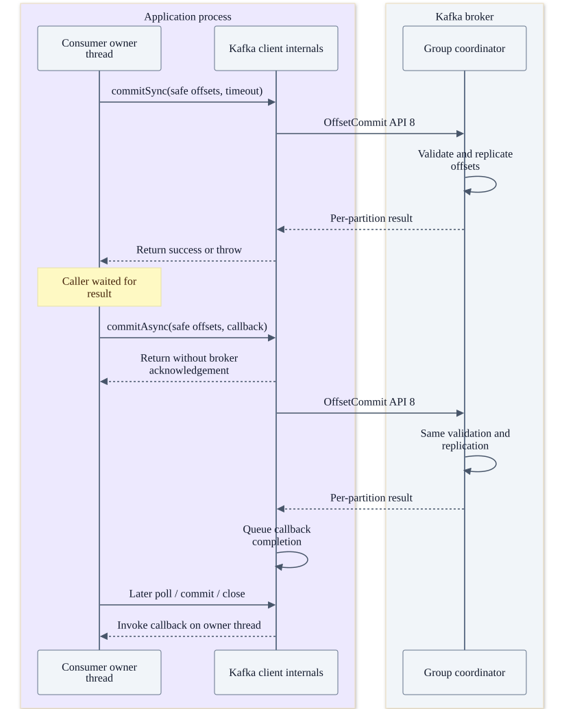
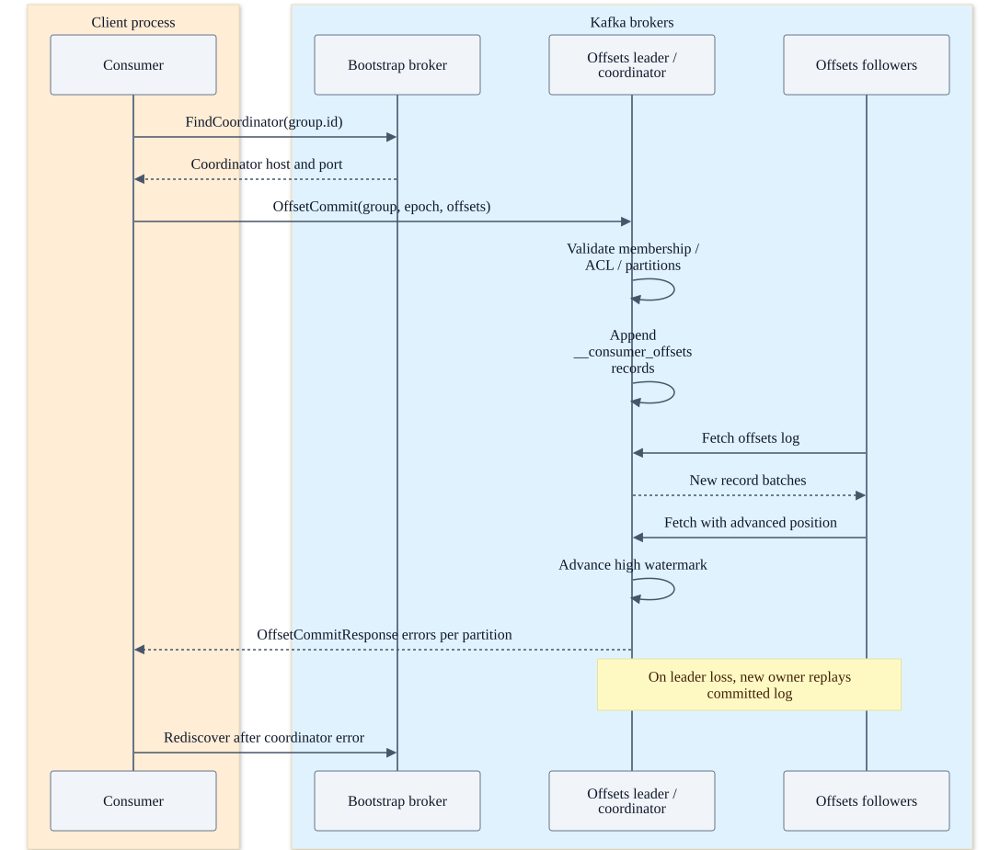
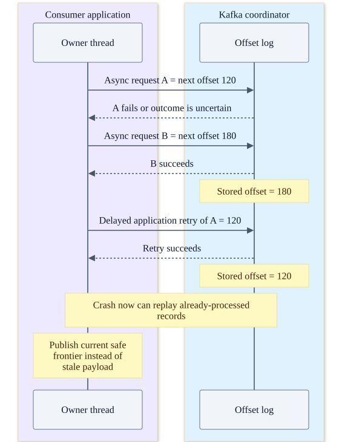
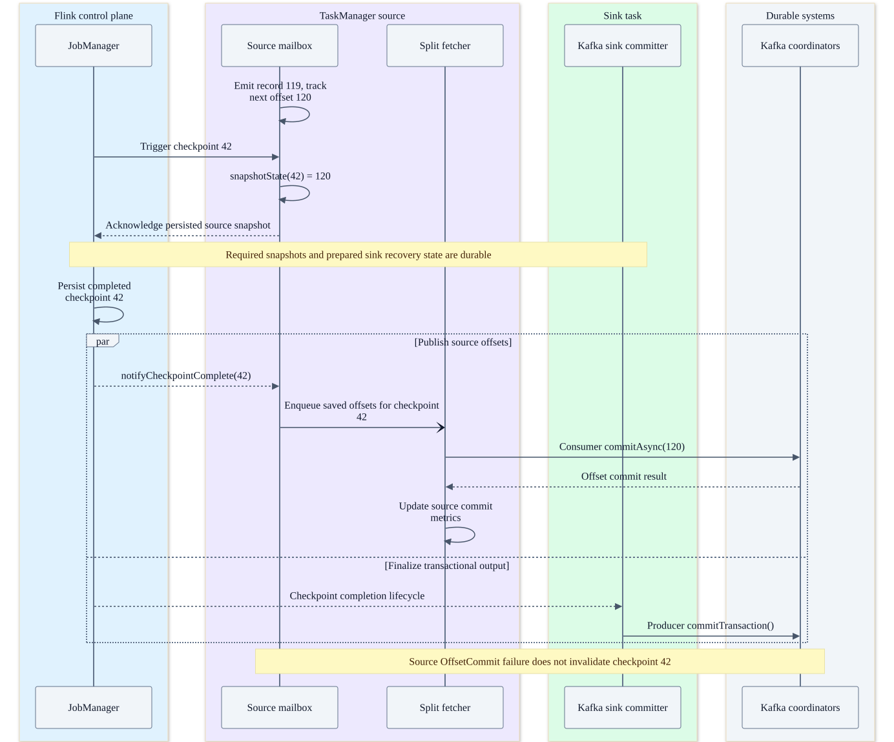
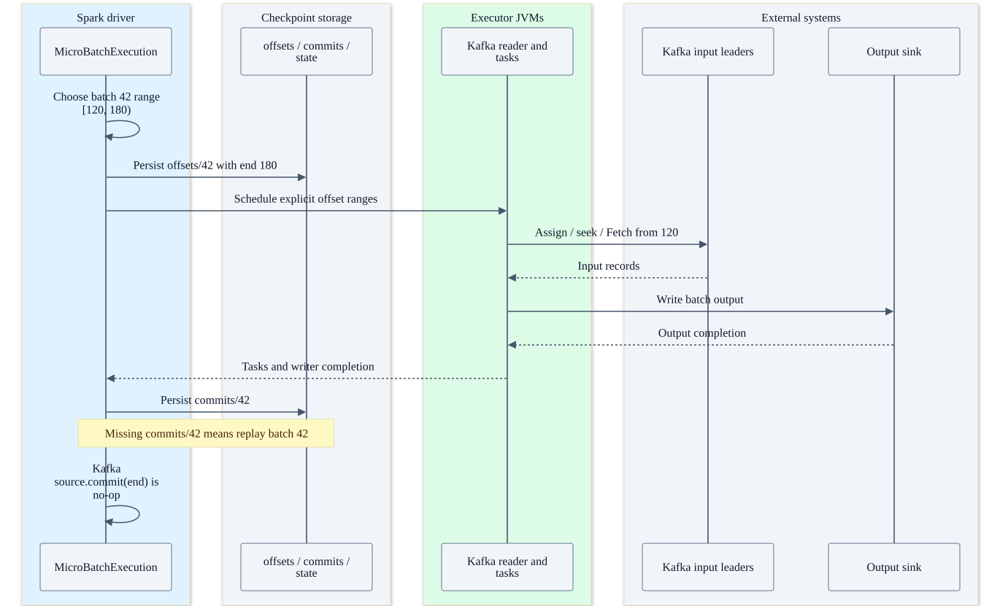

Chapter 24 · Kafka + Flink + Spark
Offset commits: Kafka, Flink and Spark
What commitSync and commitAsync really acknowledge, which thread runs them, what survives a crash, and why Flink and Spark recover from different durable records.
Start here: whose progress is being committed?
commitSync and commitAsync write the same kind of Kafka group-offset record. “Sync” changes how the caller waits and retries; it does not select a stronger server-side storage format. Neither method commits your database writes, Flink state or Spark output.
| Runtime | Kafka source offset API | Recovery authority | What a successful offset commit does not prove |
|---|---|---|---|
| Plain KafkaConsumer | commitSync or commitAsync, or auto commit | Committed group offsets, unless the application supplies another offset store | That the sink output and offset were atomic |
| Modern Flink KafkaSource | Optional commitAsync after checkpoint completion | Completed Flink checkpoint: source splits + operator state + sink recovery state | That a Kafka sink transaction has completed |
| Spark Structured Streaming Kafka source | Neither API for source progress | Spark checkpoint offsets/commit logs and state | Kafka group offsets are not its progress ledger |
| Legacy Spark direct Kafka DStreams | CanCommitOffsets.commitAsync queues a later Kafka commitAsync | Depends on selected strategy: Kafka commits, DStream checkpoint, or an external atomic store | That enqueueing completed a broker write or made output exactly-once |
Three progress authorities, not three spellings of commit
Solid arrows store recovery progress. The dashed Flink path publishes optional Kafka group offsets. Sink output durability is a separate concern in every row.

Scope: ordinary consumer-group offset commits, modern FLIP-27 KafkaSource, Spark’s default synchronous microbatch execution, and the separate legacy DStream API. Share-consumer record acknowledgements are a different protocol; see group versus share coordinators. Internal Kafka client versions bundled by Flink/Spark may differ from the Kafka source snapshot shown here.
Four numbers that must not be confused
| Number | Meaning | Example for one partition |
|---|---|---|
| Kafka log end / fetch visibility boundary | What the log contains, and what this isolation level can read; not application progress | Log end 200; read_committed may stop at an earlier stable boundary |
| Consumer position | Next fetch position after records returned by poll; records may still be unprocessed | poll returned through 149; position may be 150 |
| Safe application frontier | Next position after the contiguous prefix whose required effects are safe | Only through 119 is safely processed: frontier 120 |
| Durable restart progress | The last stored offset or engine checkpoint that recovery actually uses | Kafka group offset 100, or Flink checkpoint next offset 120 |
Commit the next record to process, not the last processed record. For a fully handled batch, the pinned Kafka API recommends ConsumerRecords.nextOffsets(), which also carries leader epochs. Kafka offsets need not be consecutive: compaction, transactions and control batches can create gaps. Track the safe frontier in the delivered sequence, not an assumption that every integer is a user record.
Commit the safe frontier, not the furthest finished record
Illustrative contiguous input offsets. 102 is unfinished, so the safe restart offset is 102 even though 103 and 104 finished. Real Kafka offsets can have gaps.

commitSync() with no map uses the consumer’s consumed positions. It does not wait for your worker pool, database futures or asynchronous sink writes. commitAsync() has the same limitation. Committing 150 while record 120 is still unfinished can skip 120 on restart.
An offset commit does not seek the current consumer, delete source records, acknowledge individual share records, or force an input-topic transaction to commit. seek changes the live position; OffsetCommit changes stored group progress. They solve different problems.
commitSync versus commitAsync: exact contract
| Concern | commitSync | commitAsync |
|---|---|---|
| Caller waiting | Waits for success, a non-retriable failure, or timeout/interruption | Does not wait for the broker acknowledgement; reports completion through callback |
| Retries in inspected clients | Retries expected retriable failures within the API deadline | Does not automatically retry an errored explicit commit attempt |
| Result | Normal return means this commit succeeded; failure throws | Method return is not success; inspect callback exception |
| Server storage | OffsetCommit → group coordinator → replicated offsets log | Same RPC, validation and durable log |
| Ordering | Can be used as a bounded final progress checkpoint while ownership remains valid | Calls and their callbacks are ordered within the consumer API contract |
| Cost | Blocks the owner’s application work and next poll | Overlaps work with commit latency but still consumes broker, network and callback capacity |
Same server acknowledgement, different caller waiting
Two alternatives on one consumer owner thread. Async submission may reach the network before or after method return; this shows one possible schedule. Return is not a broker acknowledgement.

“Async” is not “no local waiting of any kind.” The inspected AsyncKafkaConsumer.commit waits for offsetsReady so the network thread captures positions before subsequent fetch progress changes them. It also executes already queued callbacks. The promise is not to synchronously await this broker commit result.
Subtle version caveat: does commitSync drain all earlier callbacks?
The pinned commitAsync Javadoc documents ordered invocations/callbacks and completion before a subsequent sync call returns. The pinned commitSync Javadoc separately qualifies the earlier-callback guarantee to the consumer group protocol. The newer delegate explicitly waits for lastPendingAsyncCommit and drains callbacks. The classic delegate also drains completed callbacks and has a pending-async path for empty maps, but do not turn this into a stronger cross-version guarantee than the API documents.
A timeout or other exceptional exit is not a successful drain. Nor does waiting for an earlier async attempt mean that attempt succeeded: its error still belongs to its callback. Inspect the exact client version and group protocol used by your application.
Which process, thread and module runs the work?
AsyncKafkaConsumer is a client implementation name selected by group.protocol=consumer; it supports both commit methods. ClassicKafkaConsumer supports both too. Choosing commitAsync does not switch delegates or spawn a pod.
The word async appears at two different layers
Both delegate implementations expose both APIs. Classic does not acquire a dedicated commit thread just because commitAsync is used. In the consumer-protocol delegate, network I/O is separated from user callback execution.

| Boundary | Code path | Ownership rule |
|---|---|---|
| Classic application thread | KafkaConsumer → ClassicKafkaConsumer → ConsumerCoordinator → ConsumerNetworkClient | Ordinary API calls drive commit I/O/completion. The classic membership heartbeat thread is not a dedicated commit callback executor. |
| New consumer application thread | AsyncKafkaConsumer → application-event queue | Sync waits on a future; async queues callback delivery. KafkaConsumer remains a single-owner API. |
| New consumer network thread | ApplicationEventProcessor → CommitRequestManager → NetworkClientDelegate | Sends the OffsetCommit request and receives its result; queues user callback work. |
| User callback execution | OffsetCommitCallbackInvoker; classic completion queue | Runs on the consumer’s application thread during consumer operations. Keep callbacks short. |
| Flink TaskManager JVM | Source task/mailbox → split-fetcher task queue → KafkaPartitionSplitReader | The fetcher owns the source consumer. Do not call its commit methods concurrently from the mailbox. |
| Spark executor JVM | KafkaDataConsumer assign/seek/poll | Spark-selected offset ranges drive reads; there is no source group-offset commit to offload. |
On Kubernetes, a broker, JobManager, TaskManager, Spark driver or executor is commonly deployed as a separate process/pod. The boxes above are logical thread/module boundaries, not a required pod-per-box layout. Multiple source subtasks and operator chains can share a TaskManager JVM. Broker request handling, coordinator execution and storage callbacks share a broker process, with pools/queues between them.
Follow one OffsetCommit through the distributed cluster
Suppose group payments consumes orders-0 led by broker B1, but its __consumer_offsets partition is led by B2. Fetch goes to B1; OffsetCommit goes to B2. B2 is the group coordinator for this group because it leads the backing offsets partition. If B1 and B2 happen to be the same broker, these remain different logical operations.
The commit goes to the coordinator, not every input leader
Illustrative RF=3 offsets partition. Follower Fetch replication advances the high watermark. Broker role placement is independent of which broker leads the input data partition.

| Wire field / response | Meaning |
|---|---|
| API key 8: OffsetCommit | Same Kafka binary request over the broker listener’s TCP/TLS connection for both Java methods; not gRPC and not a controller RPC. |
| GroupId + MemberId + GenerationIdOrMemberEpoch | Group identity and ownership validation; classic generation versus consumer-protocol member epoch. Manual assignment does not imply ordinary membership/rebalance fencing. |
| GroupInstanceId | Optional static membership identity in supported versions. |
| Topic + PartitionIndex + CommittedOffset | The topic-partition resume point. Names through v9; IDs in v10 at this source pin. |
| CommittedLeaderEpoch + CommittedMetadata | Input-partition epoch metadata and optional user metadata; this epoch is not the consumer member epoch. |
| Response throttle time + partition ErrorCode | Each partition reports an outcome. A multi-partition request is not an atomic sink transaction; validation may reject some partitions and accept others. |
Broker flow: KafkaApis.handleOffsetCommitRequest authorizes and validates → GroupCoordinatorService.commitOffsets schedules a write keyed by the group’s backing partition → OffsetMetadataManager.commitOffset creates records → coordinator runtime appends them → replication advances the internal partition’s high watermark → deferred response completes.
The durable key is the group/topic/partition offset key, and the value includes the committed next offset and metadata. The in-memory coordinator view is reconstructed by replay; it is not the durability boundary. Normal offset writes are not stored in KRaft’s cluster metadata log. KRaft records leadership and cluster metadata, while the offset topic replicates through broker partition replication.
A successful commit is replication-backed, not a promise of one physical fsync per API call. Resilience still depends on replicas, ISR/min-ISR policy, eligible leadership, disk survival and clean recovery. Unavailable sufficient replicas can reject or delay writes; choosing async cannot fix that. See leadership and metadata failure recovery and the complete versioned RPC schemas.
Failure windows and the stale retry trap
Why retrying an old callback payload is unsafe
This is a new application retry after a newer request—not Kafka reordering the original calls. Assume unchanged valid ownership; both writes are accepted.

The coordinator stores accepted updates in log order; it is not a compare-and-set on the largest offset. A deliberate rewind can be valid. Therefore the client/application must not submit an obsolete retry after a newer frontier. The sequence above does not contradict FIFO callback ordering: the old retry is a new later invocation.
| Failure window | What can be true | Recovery / safe response |
|---|---|---|
| Output succeeded, process dies before offset commit | Sink contains effects; Kafka still holds an older restart offset | Replay is expected. Use idempotent output or an atomic output+progress design. |
| Offset committed before output finishes | Restart skips records whose effects were not durable | Data can be lost from the application result. Waiting with commitSync does not repair the wrong order. |
| Coordinator appended/replicated but response is lost | Client sees timeout/disconnect although the offset may be durable | Outcome is uncertain, not proven rollback. Re-establish ownership and use a current safe frontier. |
| Coordinator broker fails before replication completes | A speculative append may not survive failover | New offsets leader loads committed state; retry/rediscover within valid ownership. |
| NOT_COORDINATOR / loading / unavailable | Cached coordinator may be stale or its shard not ready | Rediscovery and bounded retry. Sync handles retriable failures; async exposes its failed attempt. |
| Rebalance / stale member / fenced static instance | This consumer may no longer own the partitions | Do not blindly loop on the old map. Resolve assignment; stop the fenced instance. |
| Mixed partition errors | Some offsets can have succeeded even though the API reports an exception | Do not assume all-or-nothing. Track safe progress per partition. |
| Commit callback never observed before process death | Async call returned but result was not observed | Restore from durable progress, not the application’s last submitted request. |
| Source data expires before replay | A saved offset cannot recreate deleted Kafka records | Retention must cover outage/recovery lag. Fail or reset according to policy; neither commit method restores missing data. |
| Stored group offset expires or a fresh group is used | No committed Kafka resume point exists | Plain consumers need explicit starting/reset policy. Engine checkpoints are separate, but still need retained source data. |
For manually assigned consumers, a shared group.id is not an application-wide lock: independent clients can overwrite each other’s offsets. For subscribe-based consumers, distinguish a recoverable coordinator move from a membership error. On partition revocation, commit only a known-safe frontier while ownership permits it; after partitions are lost, do not assume you can commit them.
Plain Java consumer: correct order before API choice
Illustrative Java sketch for the pinned API; imports/setup and shutdown/error policy omitted. It assumes enable.auto.commit=false, one consumer owner thread, sequential batch processing, and a sink function that returns only when the whole batch’s required effects are durable. These snippets were not compiled or executed.
ConsumerRecords<String, String> records = consumer.poll(Duration.ofMillis(250));
writeBatchAndWaitForDurability(records);
consumer.commitSync(records.nextOffsets(), Duration.ofSeconds(5));This is at-least-once output under a crash between sink success and commit success. To overlap commit latency, change the last line—not the safe frontier:
Map<TopicPartition, OffsetAndMetadata> safe = Map.copyOf(records.nextOffsets());
consumer.commitAsync(safe, (attempted, error) -> {
if (error != null) {
recordCommitFailure(attempted, error);
}
});Continue driving the consumer API so callbacks execute. Publish the next current safe frontier under a bounded policy; do not recursively retry the callback’s stale attempted map. Treat fatal authorization/fencing failures explicitly. A graceful final commitSync(currentSafe, timeout) can reduce duplicate replay, but only while ownership remains valid, and it cannot protect a hard crash.
What changes with a worker pool?
Retain a per-partition ordered completion tracker. Dispatch work while maintaining consumer ownership on one thread; pause partitions if necessary to bound unfinished work, continue required polling, and advance the commit frontier only over work known complete. A completion at offset 104 cannot cover an unfinished 102. A queue of “largest finished offset” values is not sufficient. On rebalance, stop accepting work for revoked partitions and prevent late workers from advancing an obsolete ownership epoch.
Use Kafka producer transactions for Kafka-to-Kafka atomic output+offset commits through sendOffsetsToTransaction, not either ordinary consumer commit API. An external database instead needs its own atomic offset+output transaction, idempotency or another compatible recovery protocol.
Flink: checkpoint authority, async offset publication
Flink checkpoint completion fans out to two different commits
TaskManager source mailbox and fetcher are threads in a JVM, not separate pods. The sink committer may be in another task/JVM. This is a logical flow, not a total ordering between source-offset and sink-transaction completion.

| Step | Code / thread | Meaning |
|---|---|---|
| 1. Read and emit | KafkaPartitionSplitReader fetcher → source mailbox → KafkaRecordEmitter | A prefetched record is not yet a checkpointed source offset. Emitter advances split state after deserialization/emission. |
| 2. Snapshot checkpoint 42 | KafkaSourceReader.snapshotState(42), source task | Save split next-offsets. Also keep offsetsToCommit[42] if enabled. Do not use the consumer’s latest fetched position. |
| 3. Complete the global checkpoint | Flink checkpoint lifecycle | Recovery state and completion metadata become authoritative after the required tasks acknowledge. An individual source snapshot alone is not global completion. |
| 4. Notify source completion | KafkaSourceReader.notifyCheckpointComplete(42) | Select exactly the saved map for checkpoint 42; absent/empty maps are handled without inventing offsets. |
| 5. Submit commit work | KafkaSourceFetcherManager.enqueueOffsetsCommitTask | Marshal access to the fetcher-owned Kafka consumer; create a fetcher if the old one has ended. |
| 6. Call Kafka | KafkaPartitionSplitReader.notifyCheckpointComplete → consumer.commitAsync | Send ordinary OffsetCommit; record callback success/failure metrics and prune bookkeeping on success. |
| 7. Restore | Checkpoint split offsets → assign/seek | Recovery uses saved next-offsets even if the Kafka group commit never succeeded. |
Worked example: checkpoint 42 contains source next offset 120. The source has since fetched up to 200 and emitted up to 179. Its checkpoint-42 Kafka commit must publish 120, not 180 or 200. If the task fails and checkpoint 42 is the recovery point, it resumes from 120 with matching operator state. Alignment/channel-state handling belongs to the Flink checkpoint protocol, not this consumer offset call.
Failure of this Kafka offset commit does not invalidate the completed Flink checkpoint. The connector logs and counts callback errors. Pending bookkeeping can remain until a later successful completion subsumes it. Do not describe that as an infinite automatic retry of the exact same failed request.
Configuration: commit.offsets.on.checkpoint defaults true; the builder defaults it false when group.id is absent. Kafka auto commit defaults false here, but the builder’s conditional override allows explicit configuration—so “Flink always forces auto commit off” would be too strong. With checkpointing enabled, keep source progress publication tied to completed checkpoints rather than Kafka’s poll-based auto-commit clock. Without completed checkpoints there are no checkpoint-completion notifications to publish.
Fresh bootstrap may use an OffsetsInitializer.committedOffsets policy. That does not make Kafka group offsets authoritative when restoring an existing checkpoint/savepoint. Flink owns split assignment; a source consumer’s group ID does not make the Kafka group coordinator schedule Flink subtasks.
Source commit versus exactly-once Kafka sink commit
The source calls KafkaConsumer.commitAsync for ordinary group progress. The exactly-once sink’s KafkaCommitter calls KafkaProducer.commitTransaction for transactional output. They can target different coordinator brokers and complete at different times. There is no single Kafka transaction joining these ordinary source offsets to the output in this connector path.
Flink’s completed checkpoint and recoverable sink committables connect input replay, operator state and sink finalization. A failed source offset publication is monitoring/bookkeeping loss; a sink transaction that cannot be finalized is a sink correctness/recovery problem with separate handling. See checkpoint recovery and transaction marker recovery.
Spark Structured Streaming: commit logs, not consumer commits
For the built-in Kafka source, the answer to “does Spark use commitSync or commitAsync?” is neither for source progress. KafkaSourceProvider disables auto commit on its consumers and rejects the user option. KafkaMicroBatchStream.commit(end) is empty. The word commit in Spark is not evidence of an OffsetCommit RPC.
Spark Structured Streaming: checkpoint logs drive restart
Default synchronous microbatch path. Async progress tracking, continuous processing and RealTimeTrigger have different timing and are outside this sequence. There is no input OffsetCommit RPC in this flow.

| Artifact or method | Meaning | Crash implication |
|---|---|---|
| checkpoint/offsets/42 | Chosen end-offset vector for microbatch 42 | Defines replayable input range, not proof that output completed |
| Executor KafkaDataConsumer | Assigns/seeks/fetches the range planned by the driver | Task retry can reread input; no executor source offset commit is needed |
| Sink write / writer commit | Sink-specific successful batch output | External effects may already exist before the driver writes its completion log |
| checkpoint/commits/42 | Batch completion metadata, including relevant state checkpoint information | Recovery can advance past batch 42 if its offset/commit records agree |
| checkpoint/state/... | Stateful operator recovery data when applicable | A source offset by itself cannot reconstruct aggregation state without replay/state recovery |
| KafkaMicroBatchStream.commit(end) | No-op source lifecycle hook | Does not update __consumer_offsets |
Example: offsets/42 defines [120,180). If the driver dies after output is written but before commits/42 is durable, recovery sees planned input without a matching completion and re-executes that batch. If commits/42 is durable, recovery advances. The sink must make repeated execution safe if you need exactly-once results.
The built-in Kafka sink’s KafkaDataWriter.commit flushes producer sends and checks errors. It does not atomically commit source offsets with those writes. Spark’s Kafka sink is at-least-once across query/task retries; producer idempotence does not deduplicate arbitrary application replay across new producer sessions. For foreachBatch, a durable batch-ID/output deduplication or sink transaction scheme is the application’s responsibility.
A configured kafka.group.id therefore does not turn consumer-group lag into Spark’s query progress. Use query start/end offsets, input/processing rates, batch duration and checkpoint status. Restart using the same valid checkpoint resumes its recorded progress; deleting it and setting startingOffsets is a new bootstrap decision, not normal failure recovery.
Scope caveat from the inspected source: RealTimeTrigger delays offset logging until batch end, and async progress tracking has its own implementation. The sequence above deliberately describes the ordinary synchronous microbatch path. Neither “asynchronous progress tracking” nor a generic Spark writer commit() should be confused with Kafka consumer commitAsync.
Legacy Spark DStreams: the exception you may remember
Legacy DStreams: commitAsync first means enqueue
Call on the original DirectKafkaInputDStream, after the output action succeeds. Queue coalescing uses max(untilOffset) only for submitted completed work; it cannot detect holes caused by out-of-order batch completion.

The older org.apache.spark.streaming.kafka010 integration exposes CanCommitOffsets on the original direct stream. Its commitAsync is thread-safe because it enqueues offset ranges; that does not make the underlying KafkaConsumer thread-safe.
The driver’s later DirectKafkaInputDStream.compute calls commitAll. This drains the queue, takes the maximum exclusive untilOffset per partition in that drain, and invokes the driver Kafka consumer’s commitAsync. Only the most recently supplied callback is retained. Enqueueing is therefore neither a broker acknowledgement nor a one-callback-per-enqueue guarantee.
stream.foreachRDD { rdd =>
val ranges = rdd.asInstanceOf[HasOffsetRanges].offsetRanges
writeOutputAndWait(rdd)
stream.asInstanceOf[CanCommitOffsets].commitAsync(ranges)
}Illustrative Scala sketch, not executed. Capture ranges from the original Kafka RDD before transformations that remove HasOffsetRanges. Disable auto commit. Call after output durability, not after merely constructing a lazy transformation. A crash after output and before durable commit still replays, so the sink must tolerate duplicates. Out-of-order asynchronous output completion also needs a contiguous-batch frontier: coalescing max(untilOffset) cannot detect unfinished earlier output.
Legacy DStreams support more than one recovery strategy. If you select Kafka offsets, they supply restart progress; if you restore a DStream checkpoint or store offsets atomically with output elsewhere, that strategy controls recovery. Do not carry a blanket “Spark commits to Kafka” statement into a Structured Streaming presentation.
Latency, throughput and operational tradeoffs
| Choice | Benefit | Cost / boundary |
|---|---|---|
| Sync commit every batch | Simple sequential control flow and explicit completion | Adds commit round-trip/replication/queueing delay to the owner’s processing cycle; long stalls affect polling liveness |
| Async periodic commit | Overlaps useful work with offset-write latency | More uncommitted progress at crash, callback/error bookkeeping, and no sink atomicity |
| Larger commit interval | Fewer coordinator writes and callbacks | Larger duplicate replay window and slower Kafka group progress visibility |
| Smaller Flink checkpoint interval | Fresher coordinated recovery points and potentially earlier transactional sink visibility | More state snapshots, checkpoint storage traffic, coordinator work and transaction overhead |
| Larger Spark microbatch | Amortizes scheduling and checkpoint-log overhead | More end-to-end waiting and a larger batch to replay after failure |
| More partitions/parallel tasks | More processing and source bandwidth capacity | More per-partition state, connections/requests, checkpoint metadata and coordination overhead |
| More replicas / stricter durability policy | Better resilience to specified failures | More replication traffic and potential write unavailability when required replicas are absent |
Back-of-envelope only: for a sequential batch with useful work time P and commit wait C, a sync-commit loop needs roughly P+C plus fetch/scheduling overhead. Async can overlap C with later work, but does not remove C from broker completion latency. If records arrive at rate r and durable progress lags by T seconds, roughly r×T records may be candidates for replay; multi-partition skew, checkpoint duration and failures change the actual number. These are reasoning aids, not measured benchmarks.
Separate three latency questions in a presentation: when was output first written, when was output safely visible to the intended reader, and when was the recovery point durable? Kafka group committed lag, Flink checkpoint age, Spark batch completion and Kafka transactional visibility answer different questions.
Presentation mental model: three questions, five verbs
Ask: who owns the work, where is progress durable, and what happens if the acknowledgement is lost?
| Verb | Remember it as |
|---|---|
| poll / fetch | Move data into the runtime; not proof of completed output |
| seek | Move this consumer’s live read position |
| commitSync / commitAsync | Publish Kafka group restart progress; wait now versus learn later |
| Flink checkpoint / Spark checkpoint logs | Persist the engine’s coordinated recovery knowledge |
| commitTransaction / sink commit | Finalize output under that sink’s protocol; not automatically the same as source progress |
Thirty-second version: “Both Kafka commit methods write the same replicated bookmark. Sync waits; async reports later. Flink’s real bookmark lives in its checkpoint and it optionally mirrors source offsets to Kafka with commitAsync. Spark Structured Streaming keeps progress in its own offset and commit logs, not Kafka consumer commits. Legacy Spark DStreams can queue Kafka commits. Exactly-once is about coordinating output with recovery progress, not choosing the method with ‘Sync’ in its name.”
What evidence was verified, and what was not?
The appendix links exact repository revisions, methods and inspected test bodies. The documentation build checks that evidence needles exist at those revisions, Mermaid renders, labels do not geometrically overlap, links resolve, and desktop/mobile layouts work. Kafka, Flink and Spark engine tests, the snippets, performance benchmarks and live broker/pod fault injection were not run. The failure matrix describes consequences derived from the code and protocol, not newly measured failure experiments.
Pinned code, inspected tests and validation scope
Pinned source snapshots: Kafka d2da6a18f839 · flink-connector-kafka ae656dd6fe23 · spark f9358a5587a2.
Engine tests, snippets, benchmarks and live fault injection were not run. Test bodies were inspected as source evidence. Component placements, offsets and crash timelines are illustrative. Apache source excerpts are licensed under Apache License 2.0.
api-sync · KafkaConsumer.java:964
Public sync API delegates to the selected consumer implementation. Read its preceding timeout and callback contract.
Kafka/clients/src/main/java/org/apache/kafka/clients/consumer/KafkaConsumer.java
964 public void commitSync() {
965 delegate.commitSync();
966 }
967
968 /**
969 * Commit offsets returned on the last {@link #poll(Duration) poll()} for all the subscribed list of topics and
970 * partitions.
971 * <p>
972 * This commits offsets only to Kafka. The offsets committed using this API will be used on the first fetch after
973 * every rebalance and also on startup. As such, if you need to store offsets in anything other than Kafka, this API
974 * should not be used.
975 * <p>
976 * This is a synchronous commit and will block until either the commit succeeds, an unrecoverable error is
977 * encountered (in which case it is thrown to the caller), or the passed timeout expires.
978 * <p>
979 * Note that asynchronous offset commits sent previously with the {@link #commitAsync(OffsetCommitCallback)}
980 * (or similar) are guaranteed to have their callbacks invoked prior to completion of this method,
981 * but only when the consumer is using the consumer group protocol.
982 *
983 * @throws org.apache.kafka.clients.consumer.CommitFailedException if the commit failed and cannot be retried.
984 * This can only occur if you are using automatic group management with {@link #subscribe(Collection)},
985 * or if there is an active group with the same <code>group.id</code> which is using group management. In such cases,
986 * when you are trying to commit to partitions that are no longer assigned to this consumer because the
987 * consumer is for example no longer part of the group this exception would be thrown.
988 * @throws org.apache.kafka.common.errors.RebalanceInProgressException if the consumer instance is in the middle of a rebalance
989 * so it is not yet determined which partitions would be assigned to the consumer. In such cases you can first
990 * complete the rebalance by calling {@link #poll(Duration)} and commit can be reconsidered afterwards.
991 * NOTE when you reconsider committing after the rebalance, the assigned partitions may have changed,api-async · KafkaConsumer.java:1183
Explicit offsets are copied. The preceding contract documents ordered async requests/callbacks and next-offset semantics.
Kafka/clients/src/main/java/org/apache/kafka/clients/consumer/KafkaConsumer.java
1183 public void commitAsync(final Map<TopicPartition, OffsetAndMetadata> offsets, OffsetCommitCallback callback) {
1184 delegate.commitAsync(offsets, callback);
1185 }
1186
1187 /**
1188 * Overrides the fetch offsets that the consumer will use on the next {@link #poll(Duration) poll(timeout)}. If this API
1189 * is invoked for the same partition more than once, the latest offset will be used on the next poll(). Note that
1190 * you may lose data if this API is arbitrarily used in the middle of consumption, to reset the fetch offsets
1191 * <p>
1192 * The next Consumer Record which will be retrieved when poll() is invoked will have the offset specified, given that
1193 * a record with that offset exists (i.e. it is a valid offset).
1194 * <p>
1195 * {@link #seekToBeginning(Collection)} will go to the first offset in the topic.
1196 * seek(0) is equivalent to seekToBeginning for a TopicPartition with beginning offset 0,
1197 * assuming that there is a record at offset 0 still available.
1198 * {@link #seekToEnd(Collection)} is equivalent to seeking to the last offset of the partition, but behavior depends on
1199 * {@code isolation.level}, so see {@link #seekToEnd(Collection)} documentation for more details.
1200 * <p>
1201 * Seeking to the offset smaller than the log start offset or larger than the log end offset
1202 * means an invalid offset is reached.
1203 * Invalid offset behaviour is controlled by the {@code auto.offset.reset} property.
1204 * If this is set to "earliest", the next poll will return records from the starting offset.
1205 * If it is set to "latest", it will seek to the last offset (similar to seekToEnd()).
1206 * If it is set to "none", an {@code OffsetOutOfRangeException} will be thrown.
1207 * <p>
1208 * Note that, the seek offset won't change to the in-flight fetch request, it will take effect in next fetch request.
1209 * So, the consumer might wait for {@code fetch.max.wait.ms} before starting to fetch the records from desired offset.
1210 *api-order-caveat · KafkaConsumer.java:936
The pinned commitSync Javadoc qualifies its prior-async-callback guarantee by group protocol; do not erase this version-specific caveat.
Kafka/clients/src/main/java/org/apache/kafka/clients/consumer/KafkaConsumer.java
936 * but only when the consumer is using the consumer group protocol.
937 *
938 * @throws org.apache.kafka.clients.consumer.CommitFailedException if the commit failed and cannot be retried.
939 * This fatal error can only occur if you are using automatic group management with {@link #subscribe(Collection)},
940 * or if there is an active group with the same <code>group.id</code> which is using group management. In such cases,
941 * when you are trying to commit to partitions that are no longer assigned to this consumer because the
942 * consumer is for example no longer part of the group this exception would be thrown.
943 * @throws org.apache.kafka.common.errors.RebalanceInProgressException if the consumer instance is in the middle of a rebalance
944 * so it is not yet determined which partitions would be assigned to the consumer. In such cases you can first
945 * complete the rebalance by calling {@link #poll(Duration)} and commit can be reconsidered afterwards.
946 * NOTE when you reconsider committing after the rebalance, the assigned partitions may have changed,
947 * and also for those partitions that are still assigned their fetch positions may have changed too
948 * if more records are returned from the {@link #poll(Duration)} call.
949 * @throws org.apache.kafka.common.errors.WakeupException if {@link #wakeup()} is called before or while this
950 * function is called
951 * @throws org.apache.kafka.common.errors.InterruptException if the calling thread is interrupted before or while
952 * this function is called
953 * @throws org.apache.kafka.common.errors.AuthenticationException if authentication fails. See the exception for more details
954 * @throws org.apache.kafka.common.errors.AuthorizationException if not authorized to the topic or to the
955 * configured groupId. See the exception for more details
956 * @throws org.apache.kafka.common.KafkaException for any other unrecoverable errors (e.g. if offset metadata
957 * is too large or if the topic does not exist).
958 * @throws org.apache.kafka.common.errors.TimeoutException if the timeout specified by {@code default.api.timeout.ms} expires
959 * before successful completion of the offset commit
960 * @throws org.apache.kafka.common.errors.FencedInstanceIdException if this consumer is using the classic group protocol
961 * and this instance gets fenced by broker.
962 */
963 @Overridedelegate · ConsumerDelegateCreator.java:61
group.protocol selects ClassicKafkaConsumer or AsyncKafkaConsumer, independently of the commit method name.
Kafka/clients/src/main/java/org/apache/kafka/clients/consumer/internals/ConsumerDelegateCreator.java
61 GroupProtocol groupProtocol = GroupProtocol.valueOf(config.getString(ConsumerConfig.GROUP_PROTOCOL_CONFIG).toUpperCase(Locale.ROOT));
62
63 if (groupProtocol == GroupProtocol.CONSUMER)
64 return new AsyncKafkaConsumer<>(config, keyDeserializer, valueDeserializer, Optional.empty());
65 else
66 return new ClassicKafkaConsumer<>(config, keyDeserializer, valueDeserializer);
67 } catch (KafkaException e) {
68 throw e;
69 } catch (Throwable t) {
70 throw new KafkaException("Failed to construct Kafka consumer", t);
71 }
72 }
73
74 public <K, V> ConsumerDelegate<K, V> create(LogContext logContext,
75 Time time,
76 ConsumerConfig config,
77 Deserializer<K> keyDeserializer,
78 Deserializer<V> valueDeserializer,
79 KafkaClient client,
80 SubscriptionState subscriptions,
81 ConsumerMetadata metadata,
82 List<ConsumerPartitionAssignor> assignors) {
83 try {
84 GroupProtocol groupProtocol = GroupProtocol.valueOf(config.getString(ConsumerConfig.GROUP_PROTOCOL_CONFIG).toUpperCase(Locale.ROOT));
85
86 if (groupProtocol == GroupProtocol.CONSUMER)
87 return new AsyncKafkaConsumer<>(
88 logContext,classic-sync · ConsumerCoordinator.java:1146
Classic sync commit polls responses and retries retriable failures within the timer.
Kafka/clients/src/main/java/org/apache/kafka/clients/consumer/internals/ConsumerCoordinator.java
1146 public boolean commitOffsetsSync(Map<TopicPartition, OffsetAndMetadata> offsets, Timer timer) {
1147 invokeCompletedOffsetCommitCallbacks();
1148
1149 if (offsets.isEmpty()) {
1150 // We guarantee that the callbacks for all commitAsync() will be invoked when
1151 // commitSync() completes, even if the user tries to commit empty offsets.
1152 return invokePendingAsyncCommits(timer);
1153 }
1154
1155 long attempts = 0L;
1156 do {
1157 if (coordinatorUnknownAndUnreadySync(timer)) {
1158 return false;
1159 }
1160
1161 RequestFuture<Void> future = sendOffsetCommitRequest(offsets);
1162 client.poll(future, timer);
1163
1164 // We may have had in-flight offset commits when the synchronous commit began. If so, ensure that
1165 // the corresponding callbacks are invoked prior to returning in order to preserve the order that
1166 // the offset commits were applied.
1167 invokeCompletedOffsetCommitCallbacks();
1168
1169 if (future.succeeded()) {
1170 if (interceptors != null)
1171 interceptors.onCommit(offsets);
1172 return true;
1173 }classic-async · ConsumerCoordinator.java:1052
Classic async commit discovers the coordinator, submits without waiting for the acknowledgement, and queues completions.
Kafka/clients/src/main/java/org/apache/kafka/clients/consumer/internals/ConsumerCoordinator.java
1052 public RequestFuture<Void> commitOffsetsAsync(final Map<TopicPartition, OffsetAndMetadata> offsets, final OffsetCommitCallback callback) {
1053 invokeCompletedOffsetCommitCallbacks();
1054
1055 RequestFuture<Void> future = null;
1056 if (offsets.isEmpty()) {
1057 // No need to check coordinator if offsets is empty since commit of empty offsets is completed locally.
1058 future = doCommitOffsetsAsync(offsets, callback);
1059 } else if (!coordinatorUnknownAndUnreadyAsync()) {
1060 // we need to make sure coordinator is ready before committing, since
1061 // this is for async committing we do not try to block, but just try once to
1062 // clear the previous discover-coordinator future, resend, or get responses;
1063 // if the coordinator is not ready yet then we would just proceed and put that into the
1064 // pending requests, and future poll calls would still try to complete them.
1065 //
1066 // the key here though is that we have to try sending the discover-coordinator if
1067 // it's not known or ready, since this is the only place we can send such request
1068 // under manual assignment (there we would not have heartbeat thread trying to auto-rediscover
1069 // the coordinator).
1070 future = doCommitOffsetsAsync(offsets, callback);
1071 } else {
1072 // we don't know the current coordinator, so try to find it and then send the commit
1073 // or fail (we don't want recursive retries which can cause offset commits to arrive
1074 // out of order). Note that there may be multiple offset commits chained to the same
1075 // coordinator lookup request. This is fine because the listeners will be invoked in
1076 // the same order that they were added. Note also that AbstractCoordinator prevents
1077 // multiple concurrent coordinator lookup requests.
1078 pendingAsyncCommits.incrementAndGet();
1079 lookupCoordinator().addListener(new RequestFutureListener<>() {classic-callback · ConsumerCoordinator.java:1037
Completed callbacks are drained by consumer operations, not by a producer Sender thread.
Kafka/clients/src/main/java/org/apache/kafka/clients/consumer/internals/ConsumerCoordinator.java
1037 void invokeCompletedOffsetCommitCallbacks() {
1038 if (asyncCommitFenced.get()) {
1039 throw new FencedInstanceIdException("Get fenced exception for group.instance.id "
1040 + rebalanceConfig.groupInstanceId.orElse("unset_instance_id")
1041 + ", current member.id is " + memberId());
1042 }
1043 while (true) {
1044 OffsetCommitCompletion completion = completedOffsetCommits.poll();
1045 if (completion == null) {
1046 break;
1047 }
1048 completion.invoke();
1049 }
1050 }
1051
1052 public RequestFuture<Void> commitOffsetsAsync(final Map<TopicPartition, OffsetAndMetadata> offsets, final OffsetCommitCallback callback) {
1053 invokeCompletedOffsetCommitCallbacks();
1054
1055 RequestFuture<Void> future = null;
1056 if (offsets.isEmpty()) {
1057 // No need to check coordinator if offsets is empty since commit of empty offsets is completed locally.
1058 future = doCommitOffsetsAsync(offsets, callback);
1059 } else if (!coordinatorUnknownAndUnreadyAsync()) {
1060 // we need to make sure coordinator is ready before committing, since
1061 // this is for async committing we do not try to block, but just try once to
1062 // clear the previous discover-coordinator future, resend, or get responses;
1063 // if the coordinator is not ready yet then we would just proceed and put that into the
1064 // pending requests, and future poll calls would still try to complete them.async-app · AsyncKafkaConsumer.java:1112
The application creates an AsyncCommitEvent and queues the user callback after the future completes.
Kafka/clients/src/main/java/org/apache/kafka/clients/consumer/internals/AsyncKafkaConsumer.java
1112 private void commitAsync(Optional<Map<TopicPartition, OffsetAndMetadata>> offsets, OffsetCommitCallback callback) {
1113 acquireAndEnsureOpen();
1114 try {
1115 AsyncCommitEvent asyncCommitEvent = new AsyncCommitEvent(offsets);
1116 lastPendingAsyncCommit = commit(asyncCommitEvent).whenComplete((committedOffsets, throwable) -> {
1117 if (throwable == null) {
1118 offsetCommitCallbackInvoker.enqueueInterceptorInvocation(committedOffsets);
1119 }
1120
1121 if (callback == null) {
1122 if (throwable != null) {
1123 log.error("Offset commit with offsets {} failed", committedOffsets, throwable);
1124 }
1125 return;
1126 }
1127
1128 offsetCommitCallbackInvoker.enqueueUserCallbackInvocation(callback, committedOffsets, (Exception) throwable);
1129 });
1130 } finally {
1131 release();
1132 }
1133 }
1134
1135 private CompletableFuture<Map<TopicPartition, OffsetAndMetadata>> commit(final CommitEvent commitEvent) {
1136 throwIfGroupIdNotDefined();
1137 offsetCommitCallbackInvoker.executeCallbacks();
1138
1139 if (commitEvent.offsets().isPresent() && commitEvent.offsets().get().isEmpty()) {async-sync · AsyncKafkaConsumer.java:1805
SyncCommitEvent waits for pending async completions and its own result under a timer.
Kafka/clients/src/main/java/org/apache/kafka/clients/consumer/internals/AsyncKafkaConsumer.java
1805 private void commitSync(Optional<Map<TopicPartition, OffsetAndMetadata>> offsets, Duration timeout) {
1806 acquireAndEnsureOpen();
1807 long commitStart = time.nanoseconds();
1808 try {
1809 SyncCommitEvent syncCommitEvent = new SyncCommitEvent(offsets, calculateDeadlineMs(time, timeout));
1810 CompletableFuture<Map<TopicPartition, OffsetAndMetadata>> commitFuture = commit(syncCommitEvent);
1811
1812 Timer requestTimer = time.timer(timeout.toMillis());
1813 awaitPendingAsyncCommitsAndExecuteCommitCallbacks(requestTimer, true);
1814
1815 wakeupTrigger.setActiveTask(commitFuture);
1816 Map<TopicPartition, OffsetAndMetadata> committedOffsets = ConsumerUtils.getResult(commitFuture, requestTimer);
1817 interceptors.onCommit(committedOffsets);
1818 } finally {
1819 wakeupTrigger.clearTask();
1820 kafkaConsumerMetrics.recordCommitSync(time.nanoseconds() - commitStart);
1821 release();
1822 }
1823 }
1824
1825 private void awaitPendingAsyncCommitsAndExecuteCommitCallbacks(Timer timer, boolean enableWakeup) {
1826 if (lastPendingAsyncCommit == null || offsetCommitCallbackInvoker == null) {
1827 return;
1828 }
1829
1830 try {
1831 final CompletableFuture<Void> futureToAwait = new CompletableFuture<>();
1832 // We don't want the wake-up trigger to complete our pending async commit future,async-handoff · AsyncKafkaConsumer.java:1135
Even the async API can wait for the background thread to capture offsetsReady; async does not mean zero blocking work.
Kafka/clients/src/main/java/org/apache/kafka/clients/consumer/internals/AsyncKafkaConsumer.java
1135 private CompletableFuture<Map<TopicPartition, OffsetAndMetadata>> commit(final CommitEvent commitEvent) {
1136 throwIfGroupIdNotDefined();
1137 offsetCommitCallbackInvoker.executeCallbacks();
1138
1139 if (commitEvent.offsets().isPresent() && commitEvent.offsets().get().isEmpty()) {
1140 return CompletableFuture.completedFuture(null);
1141 }
1142
1143 applicationEventHandler.add(commitEvent);
1144
1145 // This blocks until the background thread retrieves allConsumed positions to commit if none were explicitly specified.
1146 // This operation will ensure that the offsets to commit are not affected by fetches which may start after this
1147 ConsumerUtils.getResult(commitEvent.offsetsReady(), defaultApiTimeoutMs.toMillis());
1148 return commitEvent.future();
1149 }
1150
1151 @Override
1152 public void seek(TopicPartition partition, long offset) {
1153 if (offset < 0)
1154 throw new IllegalArgumentException("seek offset must not be a negative number");
1155
1156 acquireAndEnsureOpen();
1157 try {
1158 log.info("Seeking to offset {} for partition {}", offset, partition);
1159 SeekUnvalidatedEvent seekUnvalidatedEventEvent = new SeekUnvalidatedEvent(
1160 defaultApiTimeoutDeadlineMs(),
1161 partition,
1162 offset,commit-manager-async · CommitRequestManager.java:401
Explicit async commits are not retried after an errored attempt by this manager.
Kafka/clients/src/main/java/org/apache/kafka/clients/consumer/internals/CommitRequestManager.java
401 public CompletableFuture<Map<TopicPartition, OffsetAndMetadata>> commitAsync(final Map<TopicPartition, OffsetAndMetadata> offsets) {
402 if (offsets.isEmpty()) {
403 log.debug("Skipping commit of empty offsets");
404 return CompletableFuture.completedFuture(Map.of());
405 }
406 maybeUpdateLastSeenEpochIfNewer(offsets);
407 OffsetCommitRequestState commitRequest = createOffsetCommitRequest(offsets, Long.MAX_VALUE);
408 pendingRequests.addOffsetCommitRequest(commitRequest);
409
410 CompletableFuture<Map<TopicPartition, OffsetAndMetadata>> asyncCommitResult = new CompletableFuture<>();
411 commitRequest.future.whenComplete((committedOffsets, error) -> {
412 if (error != null) {
413 asyncCommitResult.completeExceptionally(commitAsyncExceptionForError(error));
414 } else {
415 asyncCommitResult.complete(offsets);
416 }
417 });
418 return asyncCommitResult;
419 }
420
421 /**
422 * Commit offsets, retrying on expected retriable errors while the retry timeout hasn't expired.
423 *
424 * @param offsets Offsets to commit
425 * @param deadlineMs Time until which the request will be retried if it fails with
426 * an expected retriable error.
427 * @return Future that will complete when a successful response
428 */commit-manager-sync · CommitRequestManager.java:463
Explicit sync commits retry retriable errors until the deadline, with non-retriable errors surfaced.
Kafka/clients/src/main/java/org/apache/kafka/clients/consumer/internals/CommitRequestManager.java
463 private void commitSyncWithRetries(OffsetCommitRequestState requestAttempt,
464 CompletableFuture<Map<TopicPartition, OffsetAndMetadata>> result) {
465 pendingRequests.addOffsetCommitRequest(requestAttempt);
466
467 // Retry the same commit request while it fails with RetriableException and the retry
468 // timeout hasn't expired.
469 requestAttempt.future.whenComplete((res, error) -> {
470 if (error == null) {
471 result.complete(requestAttempt.offsets);
472 } else {
473 if (error instanceof RetriableException) {
474 if (requestAttempt.isExpired()) {
475 log.info("OffsetCommit timeout expired so it won't be retried anymore");
476 result.completeExceptionally(maybeWrapAsTimeoutException(error));
477 } else {
478 requestAttempt.resetFuture();
479 commitSyncWithRetries(requestAttempt, result);
480 }
481 } else {
482 result.completeExceptionally(commitSyncExceptionForError(error));
483 }
484 }
485 });
486 }
487
488 private Throwable commitSyncExceptionForError(Throwable error) {
489 if (error instanceof StaleMemberEpochException) {
490 return new CommitFailedException("OffsetCommit failed with stale member epoch. "callback-thread · OffsetCommitCallbackInvoker.java:28
Background completion queues callbacks; the consumer application thread executes them during poll/commit/close.
28 * Utility class that helps the application thread to invoke user registered {@link OffsetCommitCallback} and
29 * {@link org.apache.kafka.clients.consumer.ConsumerInterceptor}s. This is
30 * achieved by having the background thread register a {@link OffsetCommitCallbackTask} to the invoker upon the
31 * future completion, and execute the callbacks when user polls/commits/closes the consumer.
32 */
33 public class OffsetCommitCallbackInvoker {
34 private final ConsumerInterceptors<?, ?> interceptors;
35
36 OffsetCommitCallbackInvoker(ConsumerInterceptors<?, ?> interceptors) {
37 this.interceptors = interceptors;
38 }
39
40 // Thread-safe queue to store user-defined callbacks and interceptors to be executed
41 private final BlockingQueue<OffsetCommitCallbackTask> callbackQueue = new LinkedBlockingQueue<>();
42
43 public void enqueueInterceptorInvocation(final Map<TopicPartition, OffsetAndMetadata> offsets) {
44 if (!interceptors.isEmpty()) {
45 callbackQueue.add(new OffsetCommitCallbackTask(
46 (offsetsParam, exception) -> interceptors.onCommit(offsetsParam),
47 offsets,
48 null
49 ));
50 }
51 }
52
53 public void enqueueUserCallbackInvocation(final OffsetCommitCallback callback,
54 final Map<TopicPartition, OffsetAndMetadata> offsets,
55 final Exception exception) {network-event · ApplicationEventProcessor.java:253
The consumer network thread translates application commit events into CommitRequestManager work.
253 private void process(final AsyncCommitEvent event) {
254 if (requestManagers.commitRequestManager.isEmpty()) {
255 event.future().completeExceptionally(new KafkaException("Unable to async commit " +
256 "offset because the CommitRequestManager is not available. Check if group.id was set correctly"));
257 return;
258 }
259
260 try {
261 CommitRequestManager manager = requestManagers.commitRequestManager.get();
262 Map<TopicPartition, OffsetAndMetadata> offsets = event.offsets().orElseGet(subscriptions::allConsumed);
263 event.markOffsetsReady();
264 CompletableFuture<Map<TopicPartition, OffsetAndMetadata>> future = manager.commitAsync(offsets);
265 future.whenComplete(complete(event.future()));
266 } catch (Exception e) {
267 event.future().completeExceptionally(e);
268 }
269 }
270
271 private void process(final SyncCommitEvent event) {
272 if (requestManagers.commitRequestManager.isEmpty()) {
273 event.future().completeExceptionally(new KafkaException("Unable to sync commit " +
274 "offset because the CommitRequestManager is not available. Check if group.id was set correctly"));
275 return;
276 }
277
278 try {
279 CommitRequestManager manager = requestManagers.commitRequestManager.get();
280 Map<TopicPartition, OffsetAndMetadata> offsets = event.offsets().orElseGet(subscriptions::allConsumed);wire-request · OffsetCommitRequest.json:17
Both commit APIs use OffsetCommit API 8. Version 9 supports the consumer protocol; version 10 uses topic IDs.
Kafka/clients/src/main/resources/common/message/OffsetCommitRequest.json
17 "apiKey": 8,
18 "type": "request",
19 "listeners": ["broker"],
20 "name": "OffsetCommitRequest",
21 // Versions 0-1 were removed in Apache Kafka 4.0, Version 2 is the new baseline.
22 //
23 // Version 1 adds timestamp and group membership information, as well as the commit timestamp.
24 //
25 // Version 2 adds retention time. It removes the commit timestamp added in version 1.
26 //
27 // Version 3 and 4 are the same as version 2.
28 //
29 // Version 5 removes the retention time, which is now controlled only by a broker configuration.
30 //
31 // Version 6 adds the leader epoch for fencing.
32 //
33 // version 7 adds a new field called groupInstanceId to indicate member identity across restarts.
34 //
35 // Version 8 is the first flexible version.
36 //
37 // Version 9 is the first version that can be used with the new consumer group protocol (KIP-848). The
38 // request is the same as version 8.
39 //
40 // Version 10 adds support for topic ids and removes support for topic names (KIP-848).
41 "validVersions": "2-10",
42 "flexibleVersions": "8+",
43 "fields": [
44 { "name": "GroupId", "type": "string", "versions": "0+", "entityType": "groupId",wire-response · OffsetCommitResponse.json:54
The response contains throttle time and per-topic/per-partition error codes, not an output-transaction result.
Kafka/clients/src/main/resources/common/message/OffsetCommitResponse.json
54 { "name": "ThrottleTimeMs", "type": "int32", "versions": "3+", "ignorable": true,
55 "about": "The duration in milliseconds for which the request was throttled due to a quota violation, or zero if the request did not violate any quota." },
56 { "name": "Topics", "type": "[]OffsetCommitResponseTopic", "versions": "0+",
57 "about": "The responses for each topic.", "fields": [
58 { "name": "Name", "type": "string", "versions": "0-9", "entityType": "topicName", "ignorable": true,
59 "about": "The topic name." },
60 { "name": "TopicId", "type": "uuid", "versions": "10+", "ignorable": true,
61 "about": "The topic ID." },
62 { "name": "Partitions", "type": "[]OffsetCommitResponsePartition", "versions": "0+",
63 "about": "The responses for each partition in the topic.", "fields": [
64 { "name": "PartitionIndex", "type": "int32", "versions": "0+",
65 "about": "The partition index." },
66 { "name": "ErrorCode", "type": "int16", "versions": "0+",
67 "about": "The error code, or 0 if there was no error." }
68 ]}
69 ]}
70 ]
71 }
72broker-commit · KafkaApis.scala:279
Broker authorizes group and topics, resolves topic identity, validates partitions, then delegates to the group coordinator.
Kafka/core/src/main/scala/kafka/server/KafkaApis.scala
279 def handleOffsetCommitRequest(
280 request: Request,
281 requestLocal: RequestLocal
282 ): CompletableFuture[Unit] = {
283 val offsetCommitRequest = request.body(classOf[OffsetCommitRequest])
284
285 // Reject the request if not authorized to the group.
286 if (!authHelper.authorize(request.context, READ, GROUP, offsetCommitRequest.data.groupId)) {
287 requestHelper.sendMaybeThrottle(request, offsetCommitRequest.getErrorResponse(Errors.GROUP_AUTHORIZATION_FAILED.exception))
288 CompletableFuture.completedFuture[Unit](())
289 } else {
290 val useTopicIds = OffsetCommitResponse.useTopicIds(request.header.apiVersion)
291
292 if (useTopicIds) {
293 offsetCommitRequest.data.topics.forEach { topic =>
294 metadataCache.getTopicName(topic.topicId).ifPresent(name => topic.setName(name))
295 }
296 }
297
298 val authorizedTopics = authHelper.filterByAuthorized(
299 request.context,
300 READ,
301 TOPIC,
302 offsetCommitRequest.data.topics,
303 (t: OffsetCommitRequestData.OffsetCommitRequestTopic) => t.name
304 )
305
306 val responseBuilder = OffsetCommitResponse.newBuilder(useTopicIds)coordinator-commit · GroupCoordinatorService.java:2703
The group ID selects a coordinator shard and a serialized write operation.
2703 public CompletableFuture<OffsetCommitResponseData> commitOffsets(
2704 AuthorizableRequestContext context,
2705 OffsetCommitRequestData request,
2706 BufferSupplier bufferSupplier
2707 ) {
2708 if (!isActive.get()) {
2709 return CompletableFuture.completedFuture(OffsetCommitRequest.getErrorResponse(
2710 request,
2711 Errors.COORDINATOR_NOT_AVAILABLE
2712 ));
2713 }
2714
2715 // For backwards compatibility, we support offset commits for the empty groupId.
2716 if (request.groupId() == null) {
2717 return CompletableFuture.completedFuture(OffsetCommitRequest.getErrorResponse(
2718 request,
2719 Errors.INVALID_GROUP_ID
2720 ));
2721 }
2722
2723 return runtime.scheduleWriteOperation(
2724 "commit-offset",
2725 topicPartitionFor(request.groupId()),
2726 coordinator -> coordinator.commitOffset(context, request)
2727 ).exceptionally(exception -> handleOperationException(
2728 "commit-offset",
2729 request,
2730 exception,coordinator-record · OffsetMetadataManager.java:620
Validated partition offsets produce durable coordinator records.
Kafka/group-coordinator/src/main/java/org/apache/kafka/coordinator/group/OffsetMetadataManager.java
620 public CoordinatorResult<OffsetCommitResponseData, CoordinatorRecord> commitOffset(
621 AuthorizableRequestContext context,
622 OffsetCommitRequestData request
623 ) throws ApiException {
624 CommitPartitionValidator validator = validateOffsetCommit(context, request);
625
626 final OffsetCommitResponseData response = new OffsetCommitResponseData();
627 final List<CoordinatorRecord> records = new ArrayList<>();
628 final long currentTimeMs = time.milliseconds();
629 final OptionalLong expireTimestampMs = expireTimestampMs(request.retentionTimeMs(), currentTimeMs);
630
631 request.topics().forEach(topic -> {
632 final OffsetCommitResponseTopic topicResponse = new OffsetCommitResponseTopic()
633 .setTopicId(topic.topicId())
634 .setName(topic.name());
635 response.topics().add(topicResponse);
636
637 topic.partitions().forEach(partition -> {
638 if (isMetadataInvalid(partition.committedMetadata())) {
639 topicResponse.partitions().add(new OffsetCommitResponsePartition()
640 .setPartitionIndex(partition.partitionIndex())
641 .setErrorCode(Errors.OFFSET_METADATA_TOO_LARGE.code()));
642 } else {
643 // Validate commit per-partition
644 validator.validate(
645 topic.name(),
646 topic.topicId(),
647 partition.partitionIndex()coordinator-replay · OffsetMetadataManager.java:1203
Ordinary replay replaces a key with the value from this log record; it is not numeric max(offset).
Kafka/group-coordinator/src/main/java/org/apache/kafka/coordinator/group/OffsetMetadataManager.java
1203 OffsetAndMetadata previousValue = offsets.put(
1204 groupId,
1205 topic,
1206 partition,
1207 OffsetAndMetadata.fromRecord(recordOffset, value)
1208 );
1209 if (previousValue == null) {
1210 metrics.incrementNumOffsets();
1211 }
1212 } else {
1213 log.debug("Replaying transactional offset commit with producer id {}, key {}, value {}", producerId, key, value);
1214 // Otherwise, the transaction offset is stored in the pending transactional
1215 // offsets store. Pending offsets there are moved to the main store when
1216 // the transaction is committed; or removed when the transaction is aborted.
1217 pendingTransactionalOffsets
1218 .computeIfAbsent(producerId, __ -> new Offsets())
1219 .put(
1220 groupId,
1221 topic,
1222 partition,
1223 OffsetAndMetadata.fromRecord(recordOffset, value)
1224 );
1225 openTransactions.add(groupId, topic, partition, producerId);
1226 }
1227 } else {
1228 if (offsets.remove(groupId, topic, partition) != null) {
1229 metrics.decrementNumOffsets();
1230 }coordinator-hw · CoordinatorRuntime.java:1830
Advancing the replicated high watermark releases deferred coordinator operation completions.
1830 context.deferredEventQueue.completeUpTo(newHighWatermark);
1831 coordinatorMetrics.onUpdateLastCommittedOffset(tp, newHighWatermark);
1832 } else {
1833 log.debug("Ignored high watermark updated for {} to {} because the coordinator is not active.",
1834 tp, newHighWatermark);
1835 }
1836 } finally {
1837 context.lock.unlock();
1838 }
1839 } else {
1840 log.debug("Ignored high watermark updated for {} to {} because the coordinator does not exist.",
1841 tp, newHighWatermark);
1842 }
1843 }));
1844 }
1845 }
1846 }
1847
1848 /**
1849 * 512KB. Used for initial buffer size for write operations.
1850 */
1851 static final int INITIAL_BUFFER_SIZE = 512 * 1024;
1852
1853 /**
1854 * The log prefix.
1855 */
1856 private final String logPrefix;
1857test-async-no-retry · CommitRequestManagerTest.java:986
Inspected test asserts no resend after a failed explicit async commit attempt.
986 public void testOffsetCommitRequestErroredRequestsNotRetriedForAsyncCommit(final Errors error) {
987 CommitRequestManager commitRequestManager = create(true, 100);
988 when(coordinatorRequestManager.coordinator()).thenReturn(Optional.of(mockedNode));
989
990 Map<TopicPartition, OffsetAndMetadata> offsets = Collections.singletonMap(new TopicPartition("topic", 1),
991 new OffsetAndMetadata(0));
992
993 // Send async commit (not expected to be retried).
994 CompletableFuture<Map<TopicPartition, OffsetAndMetadata>> commitResult = commitRequestManager.commitAsync(offsets);
995 completeOffsetCommitRequestWithError(commitRequestManager, error);
996 NetworkClientDelegate.PollResult res = commitRequestManager.poll(time.milliseconds());
997 assertEquals(0, res.unsentRequests.size());
998 assertTrue(commitResult.isDone());
999 assertTrue(commitResult.isCompletedExceptionally());
1000 if (error.exception() instanceof RetriableException) {
1001 assertFutureThrows(RetriableCommitFailedException.class, commitResult);
1002 }
1003
1004 // We expect that the request should not have been retried on this async commit.
1005 assertExceptionHandling(commitRequestManager, error, false);
1006 }
1007
1008 @Test
1009 public void testOffsetCommitSyncTimeoutNotReturnedOnPollAndFails() {
1010 CommitRequestManager commitRequestManager = create(false, 100);
1011 when(coordinatorRequestManager.coordinator()).thenReturn(Optional.of(mockedNode));
1012
1013 Map<TopicPartition, OffsetAndMetadata> offsets = Collections.singletonMap(test-sync-retry · CommitRequestManagerTest.java:419
Inspected parameterized test covers sync retry classification.
419 public void testCommitSyncRetriedAfterExpectedRetriableException(Errors error) {
420 CommitRequestManager commitRequestManager = create(false, 100);
421 when(coordinatorRequestManager.coordinator()).thenReturn(Optional.of(mockedNode));
422
423 Map<TopicPartition, OffsetAndMetadata> offsets = Collections.singletonMap(
424 new TopicPartition("topic", 1),
425 new OffsetAndMetadata(0));
426 long deadlineMs = time.milliseconds() + defaultApiTimeoutMs;
427 CompletableFuture<Map<TopicPartition, OffsetAndMetadata>> commitResult = commitRequestManager.commitSync(offsets, deadlineMs);
428 sendAndVerifyOffsetCommitRequestFailedAndMaybeRetried(commitRequestManager, error, commitResult);
429
430 // We expect that request should have been retried on this sync commit.
431 assertExceptionHandling(commitRequestManager, error, true);
432 }
433
434 @Test
435 public void testCommitSyncFailsWithCommitFailedExceptionIfUnknownMemberId() {
436 CommitRequestManager commitRequestManager = create(false, 100);
437 when(coordinatorRequestManager.coordinator()).thenReturn(Optional.of(mockedNode));
438
439 Map<TopicPartition, OffsetAndMetadata> offsets = Collections.singletonMap(
440 new TopicPartition("topic", 1),
441 new OffsetAndMetadata(0));
442 long deadlineMs = time.milliseconds() + defaultApiTimeoutMs;
443 CompletableFuture<Map<TopicPartition, OffsetAndMetadata>> commitResult = commitRequestManager.commitSync(offsets, deadlineMs);
444
445 completeOffsetCommitRequestWithError(commitRequestManager, Errors.UNKNOWN_MEMBER_ID);
446 NetworkClientDelegate.PollResult res = commitRequestManager.poll(time.milliseconds());test-async-drain · AsyncKafkaConsumerTest.java:708
Inspected test covers pending async completion wait and timeout even for an empty sync map.
Kafka/clients/src/test/java/org/apache/kafka/clients/consumer/internals/AsyncKafkaConsumerTest.java
708 public void testCommitSyncAwaitsCommitAsyncCompletionWithEmptyOffsets() {
709 final TopicPartition tp = new TopicPartition("foo", 0);
710 final CompletableFuture<Void> asyncCommitFuture = setUpConsumerWithIncompleteAsyncCommit(tp);
711
712 // Commit async is not completed yet, so commit sync should wait for it to complete (time out)
713 assertThrows(TimeoutException.class, () -> consumer.commitSync(Collections.emptyMap(), Duration.ofMillis(100)));
714
715 // Complete exceptionally async commit event
716 asyncCommitFuture.completeExceptionally(new KafkaException("Test exception"));
717
718 // Commit async is completed, so commit sync completes immediately (since offsets are empty)
719 assertDoesNotThrow(() -> consumer.commitSync(Collections.emptyMap(), Duration.ofMillis(100)));
720 }
721
722 @Test
723 public void testCommitSyncAwaitsCommitAsyncCompletionWithNonEmptyOffsets() {
724 final TopicPartition tp = new TopicPartition("foo", 0);
725 final CompletableFuture<Void> asyncCommitFuture = setUpConsumerWithIncompleteAsyncCommit(tp);
726
727 // Mock to complete sync event
728 completeCommitSyncApplicationEventSuccessfully();
729
730 // Commit async is not completed yet, so commit sync should wait for it to complete (time out)
731 assertThrows(TimeoutException.class, () -> consumer.commitSync(Collections.singletonMap(tp, new OffsetAndMetadata(20)), Duration.ofMillis(100)));
732
733 // Complete async commit event
734 asyncCommitFuture.complete(null);
735flink-emitter · KafkaRecordEmitter.java:54
Flink tracks the next offset after successful deserialization/emission into the source output.
54 splitState.setCurrentOffset(consumerRecord.offset() + 1);
55 } catch (Exception e) {
56 throw new IOException("Failed to deserialize consumer record due to", e);
57 }
58 }
59
60 private static class SourceOutputWrapper<T> implements Collector<T> {
61
62 private SourceOutput<T> sourceOutput;
63 private long timestamp;
64
65 @Override
66 public void collect(T record) {
67 sourceOutput.collect(record, timestamp);
68 }
69
70 @Override
71 public void close() {}
72
73 private void setSourceOutput(SourceOutput<T> sourceOutput) {
74 this.sourceOutput = sourceOutput;
75 }
76
77 private void setTimestamp(long timestamp) {
78 this.timestamp = timestamp;
79 }
80 }
81 }flink-snapshot · KafkaSourceReader.java:98
Split offsets remain checkpoint state even when Kafka offset committing is disabled.
98 public List<KafkaPartitionSplit> snapshotState(long checkpointId) {
99 List<KafkaPartitionSplit> splits = super.snapshotState(checkpointId);
100 if (!commitOffsetsOnCheckpoint) {
101 return splits;
102 }
103
104 if (splits.isEmpty() && offsetsOfFinishedSplits.isEmpty()) {
105 offsetsToCommit.put(checkpointId, Collections.emptyMap());
106 } else {
107 Map<TopicPartition, OffsetAndMetadata> offsetsMap =
108 offsetsToCommit.computeIfAbsent(checkpointId, id -> new HashMap<>());
109 // Put the offsets of the active splits.
110 for (KafkaPartitionSplit split : splits) {
111 // If the checkpoint is triggered before the partition starting offsets
112 // is retrieved, do not commit the offsets for those partitions.
113 if (split.getStartingOffset() >= 0) {
114 offsetsMap.put(
115 split.getTopicPartition(),
116 new OffsetAndMetadata(split.getStartingOffset()));
117 }
118 }
119 // Put offsets of all the finished splits.
120 offsetsMap.putAll(offsetsOfFinishedSplits);
121 }
122 return splits;
123 }
124
125 @Overrideflink-notify · KafkaSourceReader.java:126
A completed checkpoint selects its saved offset map, not the latest prefetched position.
126 public void notifyCheckpointComplete(long checkpointId) throws Exception {
127 LOG.debug("Committing offsets for checkpoint {}", checkpointId);
128 if (!commitOffsetsOnCheckpoint) {
129 return;
130 }
131
132 Map<TopicPartition, OffsetAndMetadata> committedPartitions =
133 offsetsToCommit.get(checkpointId);
134 if (committedPartitions == null) {
135 LOG.debug("Offsets for checkpoint {} have already been committed.", checkpointId);
136 return;
137 }
138
139 if (committedPartitions.isEmpty()) {
140 LOG.debug("There are no offsets to commit for checkpoint {}.", checkpointId);
141 removeAllOffsetsToCommitUpToCheckpoint(checkpointId);
142 return;
143 }
144
145 ((KafkaSourceFetcherManager) splitFetcherManager)
146 .commitOffsets(
147 committedPartitions,
148 (ignored, e) -> {
149 // The offset commit here is needed by the external monitoring. It won't
150 // break Flink job's correctness if we fail to commit the offset here.
151 if (e != null) {
152 kafkaSourceReaderMetrics.recordFailedCommit();
153 LOG.warn(flink-commit-failure · KafkaSourceReader.java:152
Commit failure logs and records a metric; success prunes pending bookkeeping.
152 kafkaSourceReaderMetrics.recordFailedCommit();
153 LOG.warn(
154 "Failed to commit consumer offsets for checkpoint {}",
155 checkpointId,
156 e);
157 } else {
158 LOG.debug(
159 "Successfully committed offsets for checkpoint {}",
160 checkpointId);
161 kafkaSourceReaderMetrics.recordSucceededCommit();
162 // If the finished topic partition has been committed, we remove it
163 // from the offsets of the finished splits map.
164 committedPartitions.forEach(
165 (tp, offset) ->
166 kafkaSourceReaderMetrics.recordCommittedOffset(
167 tp, offset.offset()));
168 offsetsOfFinishedSplits
169 .entrySet()
170 .removeIf(
171 entry ->
172 committedPartitions.containsKey(
173 entry.getKey()));
174 removeAllOffsetsToCommitUpToCheckpoint(checkpointId);
175 }
176 });
177 }
178
179 private void removeAllOffsetsToCommitUpToCheckpoint(long checkpointId) {flink-fetcher · KafkaSourceFetcherManager.java:93
Commit work is enqueued onto the split fetcher owning the Kafka consumer.
93 private void enqueueOffsetsCommitTask(
94 SplitFetcher<ConsumerRecord<byte[], byte[]>, KafkaPartitionSplit> splitFetcher,
95 Map<TopicPartition, OffsetAndMetadata> offsetsToCommit,
96 OffsetCommitCallback callback) {
97 KafkaPartitionSplitReader kafkaReader =
98 (KafkaPartitionSplitReader) splitFetcher.getSplitReader();
99
100 splitFetcher.enqueueTask(
101 new SplitFetcherTask() {
102 @Override
103 public boolean run() throws IOException {
104 kafkaReader.notifyCheckpointComplete(offsetsToCommit, callback);
105 return true;
106 }
107
108 @Override
109 public void wakeUp() {}
110 });
111 }
112 }
113flink-client · KafkaPartitionSplitReader.java:341
The modern KafkaSource uses the Kafka consumer async commit API.
341 ensureConsumer().commitAsync(offsetsToCommit, offsetCommitCallback);
342 }
343
344 @VisibleForTesting
345 KafkaConsumer<byte[], byte[]> consumer() {
346 return ensureConsumer();
347 }
348
349 @VisibleForTesting
350 Duration getPollTimeout() {
351 return pollTimeout;
352 }
353
354 // --------------- private helper method ----------------------
355
356 private static Duration parsePollTimeout(Properties props) {
357 long pollTimeoutMs =
358 KafkaSourceOptions.getOption(
359 props, KafkaSourceOptions.POLL_TIMEOUT_MS, Long::parseLong);
360 // KafkaConsumer#poll only rejects negative timeouts, so validate the same bound here. Doing
361 // it eagerly turns a misconfiguration into a readable error instead of an exception thrown
362 // from the split fetcher thread on the first poll.
363 Preconditions.checkArgument(
364 pollTimeoutMs >= 0,
365 "Property %s should not be negative, but is %s",
366 KafkaSourceOptions.POLL_TIMEOUT_MS.key(),
367 pollTimeoutMs);
368 return Duration.ofMillis(pollTimeoutMs);flink-seek · KafkaPartitionSplitReader.java:262
Flink assigns splits explicitly and seeks to their starting offsets.
262 consumer.assign(newPartitionAssignments);
263
264 // Seek on the newly assigned partitions to their stating offsets.
265 seekToStartingOffsets(
266 consumer,
267 partitionsStartingFromEarliest,
268 partitionsStartingFromLatest,
269 partitionsStartingFromSpecifiedOffsets);
270 // Setup the stopping offsets.
271 acquireAndSetStoppingOffsets(
272 consumer, partitionsStoppingAtLatest, partitionsStoppingAtCommitted);
273
274 // After acquiring the starting and stopping offsets, remove the empty splits if necessary.
275 removeEmptySplits(consumer);
276
277 maybeLogSplitChangesHandlingResult(consumer, splitsChange);
278 }
279
280 @Override
281 public void wakeUp() {
282 // The only method called from a thread other than the fetcher thread, relying on
283 // KafkaConsumer.wakeup() being the one documented thread-safe consumer call.
284 //
285 // wakeUp() only ever targets a running fetch task (see SplitReader#wakeUp javadoc), which
286 // the base SplitFetcher can only schedule after handleSplitsChanges() — and therefore
287 // ensureConsumer() — has run at least once on the fetcher thread. So the consumer is
288 // always non-null here in practice; a pre-creation wakeup has nothing to interrupt and is
289 // safely dropped. Note this leans on an implementation invariant offlink-defaults · KafkaSourceBuilder.java:479
Missing group.id defaults checkpoint-offset commits off; auto commit defaults false rather than being universally forced off.
479 if (!props.containsKey(ConsumerConfig.GROUP_ID_CONFIG)) {
480 LOG.warn(
481 "Offset commit on checkpoint is disabled because {} is not specified",
482 ConsumerConfig.GROUP_ID_CONFIG);
483 maybeOverride(KafkaSourceOptions.COMMIT_OFFSETS_ON_CHECKPOINT.key(), "false", false);
484 }
485 maybeOverride(ConsumerConfig.ENABLE_AUTO_COMMIT_CONFIG, "false", false);
486 String configuredOffsetReset = props.getProperty(ConsumerConfig.AUTO_OFFSET_RESET_CONFIG);
487 if (configuredOffsetReset != null) {
488 OffsetResetStrategy configuredOffsetResetStrategy =
489 KafkaPropertiesUtil.getResetStrategy(configuredOffsetReset);
490 String normalizedOffsetReset = configuredOffsetResetStrategy.name().toLowerCase();
491 props.setProperty(ConsumerConfig.AUTO_OFFSET_RESET_CONFIG, normalizedOffsetReset);
492 if (KafkaPropertiesUtil.hasOpposingOffsetResetStrategies(
493 configuredOffsetResetStrategy, startingOffsetsInitializer)) {
494 LOG.warn(
495 "Configured {}={} differs from the {} strategy derived from the starting "
496 + "offsets initializer. The source will use the initializer for "
497 + "startup, but Kafka may reset to {} if an initialized offset "
498 + "becomes unavailable.",
499 ConsumerConfig.AUTO_OFFSET_RESET_CONFIG,
500 normalizedOffsetReset,
501 startingOffsetsInitializer
502 .getAutoOffsetResetStrategy()
503 .name()
504 .toLowerCase(),
505 normalizedOffsetReset);
506 }flink-options · KafkaSourceOptions.java:55
Checkpoint-offset committing defaults true, subject to builder configuration and a group ID.
55 public static final ConfigOption<Boolean> COMMIT_OFFSETS_ON_CHECKPOINT =
56 ConfigOptions.key("commit.offsets.on.checkpoint")
57 .booleanType()
58 .defaultValue(true)
59 .withDescription("Whether to commit consuming offset on checkpoint.");
60
61 public static final ConfigOption<Long> POLL_TIMEOUT_MS =
62 ConfigOptions.key("poll.timeout.ms")
63 .longType()
64 .defaultValue(Duration.ofSeconds(10).toMillis())
65 .withDescription(
66 "The maximum time in milliseconds the Kafka consumer blocks in a single "
67 + "poll() call while waiting for records. Since the poll returns "
68 + "as soon as records are available, a smaller value mainly makes "
69 + "an idle split reader react faster to split changes, at the cost "
70 + "of polling more often. 0 polls without blocking. Must not be "
71 + "negative.");
72
73 public static final ConfigOption<Boolean> TOPIC_INTEGRITY_CHECK_ENABLED =
74 ConfigOptions.key("scan.topic-integrity-check.enabled")
75 .booleanType()
76 .defaultValue(false)
77 .withDescription(
78 "Whether to verify topic id during runtime and fail if the topic is missing or recreated");
79
80 @SuppressWarnings("unchecked")
81 public static <T> T getOption(
82 Properties props, ConfigOption<?> configOption, Function<String, T> parser) {flink-sink · KafkaCommitter.java:103
Exactly-once sink finalization commits a producer transaction, not a consumer offset.
103 producer.commitTransaction();
104 backchannel.send(TransactionFinished.successful(committable.getTransactionalId()));
105 } catch (RetriableException e) {
106 LOG.warn(
107 "Encountered retriable exception while committing {}.", transactionalId, e);
108 request.retryLater();
109 } catch (ProducerFencedException e) {
110 logFencedRequest(request, e);
111 handleFailedTransaction(producer);
112 request.signalFailedWithKnownReason(e);
113 } catch (InvalidTxnStateException e) {
114 // This exception only occurs when aborting after a commit or vice versa.
115 // It does not appear on double commits or double aborts.
116 LOG.error(
117 "Unable to commit transaction ({}) because it's in an invalid state. "
118 + "Most likely the transaction has been aborted for some reason. Please check the Kafka logs for more details.",
119 request,
120 e);
121 handleFailedTransaction(producer);
122 request.signalFailedWithKnownReason(e);
123 } catch (UnknownProducerIdException e) {
124 LOG.error(
125 "Unable to commit transaction ({}) " + UNKNOWN_PRODUCER_ID_ERROR_MESSAGE,
126 request,
127 e);
128 handleFailedTransaction(producer);
129 request.signalFailedWithKnownReason(e);
130 } catch (InterruptException e) {test-flink-complete · KafkaSourceReaderTest.java:219
Inspected test verifies Kafka group offsets after checkpoint-completion notification.
219 void testOffsetCommitOnCheckpointComplete() throws Exception {
220 final String groupId = "testOffsetCommitOnCheckpointComplete";
221 try (KafkaSourceReader<Integer> reader =
222 (KafkaSourceReader<Integer>)
223 createReader(Boundedness.CONTINUOUS_UNBOUNDED, groupId)) {
224 reader.addSplits(
225 getSplits(numSplits, NUM_RECORDS_PER_SPLIT, Boundedness.CONTINUOUS_UNBOUNDED));
226 ValidatingSourceOutput output = new ValidatingSourceOutput();
227 long checkpointId = 0;
228 do {
229 checkpointId++;
230 reader.pollNext(output);
231 // Create a checkpoint for each message consumption, but not complete them.
232 reader.snapshotState(checkpointId);
233 } while (output.count() < totalNumRecords);
234
235 // The completion of the last checkpoint should subsume all the previous checkpoitns.
236 assertThat(reader.getOffsetsToCommit()).hasSize((int) checkpointId);
237
238 long lastCheckpointId = checkpointId;
239 waitUtil(
240 () -> {
241 try {
242 reader.notifyCheckpointComplete(lastCheckpointId);
243 } catch (Exception exception) {
244 throw new RuntimeException(
245 "Caught unexpected exception when polling from the reader",
246 exception);test-flink-disable · KafkaSourceReaderTest.java:284
Inspected test verifies disabled commit bookkeeping while the source still snapshots.
284 void testDisableOffsetCommit() throws Exception {
285 final Properties properties = new Properties();
286 properties.setProperty(KafkaSourceOptions.COMMIT_OFFSETS_ON_CHECKPOINT.key(), "false");
287 try (KafkaSourceReader<Integer> reader =
288 (KafkaSourceReader<Integer>)
289 createReader(
290 Boundedness.CONTINUOUS_UNBOUNDED,
291 new TestingReaderContext(),
292 (ignore) -> {},
293 properties,
294 null)) {
295 reader.addSplits(
296 getSplits(numSplits, NUM_RECORDS_PER_SPLIT, Boundedness.CONTINUOUS_UNBOUNDED));
297 ValidatingSourceOutput output = new ValidatingSourceOutput();
298 long checkpointId = 0;
299 do {
300 checkpointId++;
301 reader.pollNext(output);
302 // Create a checkpoint for each message consumption, but not complete them.
303 reader.snapshotState(checkpointId);
304 // Offsets to commit should be always empty because offset commit is disabled
305 assertThat(reader.getOffsetsToCommit()).isEmpty();
306 } while (output.count() < totalNumRecords);
307 }
308 }
309
310 @Test
311 void testKafkaSourceMetrics() throws Exception {spark-config · KafkaSourceProvider.scala:334
Structured Streaming rejects user-specified enable.auto.commit and sets it false on internal consumers.
334 val otherUnsupportedConfigs = Seq(
335 ConsumerConfig.ENABLE_AUTO_COMMIT_CONFIG, // committing correctly requires new APIs in Source
336 ConsumerConfig.INTERCEPTOR_CLASSES_CONFIG) // interceptors can modify payload, so not safe
337
338 otherUnsupportedConfigs.foreach { c =>
339 if (params.contains(s"kafka.$c")) {
340 throw new IllegalArgumentException(s"Kafka option '$c' is not supported")
341 }
342 }
343
344 if (!params.contains(s"kafka.${ConsumerConfig.BOOTSTRAP_SERVERS_CONFIG}")) {
345 throw new IllegalArgumentException(
346 s"Option 'kafka.${ConsumerConfig.BOOTSTRAP_SERVERS_CONFIG}' must be specified for " +
347 s"configuring Kafka consumer")
348 }
349
350 if (params.contains(MIN_OFFSET_PER_TRIGGER) && params.contains(MAX_OFFSET_PER_TRIGGER)) {
351 val minOffsets = params.get(MIN_OFFSET_PER_TRIGGER).get.toLong
352 val maxOffsets = params.get(MAX_OFFSET_PER_TRIGGER).get.toLong
353 if (minOffsets > maxOffsets) {
354 throw new IllegalArgumentException(s"The value of minOffsetPerTrigger($minOffsets) is " +
355 s"higher than the maxOffsetsPerTrigger($maxOffsets).")
356 }
357 }
358 }
359
360 private def validateStreamOptions(params: CaseInsensitiveMap[String]) = {
361 // Stream specific optionsspark-noop · KafkaMicroBatchStream.scala:339
The Kafka microbatch source commit callback is a no-op, not KafkaConsumer.commitSync/Async.
339 override def commit(end: Offset): Unit = {}
340
341 override def stop(): Unit = {
342 kafkaOffsetReader.close()
343 }
344
345 override def toString(): String = s"KafkaV2[$kafkaOffsetReader]"
346
347 override def metrics(latestConsumedOffset: Optional[Offset]): ju.Map[String, String] = {
348 val reCalculatedLatestPartitionOffsets =
349 if (inRealTimeMode) {
350 if (!latestConsumedOffset.isPresent) {
351 // this means a batch has no end offsets, which should not happen
352 None
353 } else {
354 Some {
355 kafkaOffsetReader.fetchLatestOffsets(
356 Some(latestConsumedOffset.get.asInstanceOf[KafkaSourceOffset].partitionToOffsets))
357 }
358 }
359 } else {
360 Option(latestPartitionOffsets)
361 }
362
363 KafkaMicroBatchStream.metrics(latestConsumedOffset, reCalculatedLatestPartitionOffsets)
364 }
365
366 /**spark-fetch · KafkaDataConsumer.scala:83
Executor consumer seeks and polls at offsets selected by Spark.
83 def fetch(offset: Long, pollTimeoutMs: Long):
84 (ju.List[ConsumerRecord[Array[Byte], Array[Byte]]], Long, AvailableOffsetRange) = {
85
86 // Seek to the offset because we may call seekToBeginning or seekToEnd before this.
87 seek(offset)
88 val p = consumer.poll(Duration.ofMillis(pollTimeoutMs))
89 val r = p.records(topicPartition)
90 logDebug(s"Polled $groupId ${p.partitions()} ${r.size}")
91 val offsetAfterPoll = consumer.position(topicPartition)
92 logDebug(s"Offset changed from $offset to $offsetAfterPoll after polling")
93 val range = getAvailableOffsetRange()
94 val fetchedData = (r, offsetAfterPoll, range)
95 if (r.isEmpty) {
96 // We cannot fetch anything after `poll`. Two possible cases:
97 // - `offset` is out of range so that Kafka returns nothing. `OffsetOutOfRangeException` will
98 // be thrown.
99 // - Cannot fetch any data before timeout. `TimeoutException` will be thrown.
100 // - Fetched something but all of them are invisible. This is a valid case and let the
101 // caller handle this.
102 if (offset < range.earliest || offset >= range.latest) {
103 throw new OffsetOutOfRangeException(
104 Map(topicPartition -> java.lang.Long.valueOf(offset)).asJava)
105 } else if (offset == offsetAfterPoll) {
106 throw new TimeoutException(
107 s"Cannot fetch record for offset $offset in $pollTimeoutMs milliseconds")
108 } else {
109 logDebug(log"Polled zero visible records for ${MDC(TOPIC_PARTITION, topicPartition)} " +
110 log"in group ${MDC(GROUP_ID, groupId)} after ${MDC(TIMEOUT, pollTimeoutMs)} " +spark-start · MicroBatchExecution.scala:1357
Default synchronous microbatch execution durably logs planned end offsets before running the batch.
1357 protected def markMicroBatchStart(execCtx: MicroBatchExecutionContext): Unit = {
1358
1359 if (!trigger.isInstanceOf[RealTimeTrigger]) {
1360 if (!offsetLog.add(
1361 execCtx.batchId,
1362 execCtx.endOffsets.toOffsets(sources, sourceIdMap, execCtx.offsetSeqMetadata)
1363 )) {
1364 throw QueryExecutionErrors.concurrentStreamLogUpdate(execCtx.batchId)
1365 }
1366
1367 logInfo(
1368 log"Committed offsets for batch ${MDC(LogKeys.BATCH_ID, execCtx.batchId)}. " +
1369 log"Metadata ${MDC(LogKeys.OFFSET_SEQUENCE_METADATA, execCtx.offsetSeqMetadata.toString)}"
1370 )
1371 } else {
1372 logInfo(log"Delay offset logging for batch ${MDC(BATCH_ID, execCtx.batchId)} " +
1373 log"in real time mode.")
1374 }
1375 }
1376
1377 /**
1378 * Method called once after the planning is done and before the start of the microbatch execution.
1379 * It can be used to perform any pre-execution tasks.
1380 */
1381 protected def markMicroBatchExecutionStart(execCtx: MicroBatchExecutionContext): Unit = {}
1382
1383 /**
1384 * Store the state store checkpoint id for a finishing batch to `currentStateStoreCkptId`,spark-end · MicroBatchExecution.scala:1558
Successful batch completion adds a checkpoint commit-log entry.
1558 if (!commitLog.add(execCtx.batchId, metadata)) {
1559 throw QueryExecutionErrors.concurrentStreamLogUpdate(execCtx.batchId)
1560 }
1561 }
1562 signalProcessAllAvailableIfRealTimeMode(execCtx)
1563 committedOffsets ++= execCtx.endOffsets
1564 }
1565
1566 /**
1567 * When running in RealTimeTrigger mode, this method extracts the end offsets after the current
1568 * batch has finished execution and writes them to the execution context. In real-time mode the
1569 * end offsets are not known up front; they are gathered from all [[RealTimeStreamScanExec]]
1570 * nodes (i.e. tasks that execute a source partition), merged, and recorded on the context so
1571 * they can subsequently be written to the offset log.
1572 */
1573 protected def populateBatchOffsetsForRTM(execCtx: MicroBatchExecutionContext): Unit = {
1574 assert(trigger.isInstanceOf[RealTimeTrigger])
1575
1576 val execs = StreamingQueryPlanTraverseHelper
1577 .collectFromUnfoldedPlan(lastExecution.executedPlan) {
1578 case e: RealTimeStreamScanExec => e
1579 }
1580
1581 val endOffsetMap = MutableMap[SparkDataStream, OffsetV2]()
1582 execs.foreach { e =>
1583 val lowLatencyExec = e.asInstanceOf[RealTimeStreamScanExec]
1584 val accus: Seq[PartitionOffsetWithIndex] =
1585 lowLatencyExec.endOffsetsAccumulator.value.asScala.toSeqspark-output-order · MicroBatchExecution.scala:1346
Sink execution completes before markMicroBatchEnd in the ordinary microbatch path.
1346 execCtx.sinkCommitProgress = batchSinkProgress
1347 markMicroBatchEnd(execCtx)
1348 }
1349 logDebug(s"Completed batch ${execCtx.batchId}")
1350 }
1351
1352
1353 /**
1354 * Called at the start of the micro batch with given offsets. It takes care of offset
1355 * checkpointing to offset log and any microbatch startup tasks.
1356 */
1357 protected def markMicroBatchStart(execCtx: MicroBatchExecutionContext): Unit = {
1358
1359 if (!trigger.isInstanceOf[RealTimeTrigger]) {
1360 if (!offsetLog.add(
1361 execCtx.batchId,
1362 execCtx.endOffsets.toOffsets(sources, sourceIdMap, execCtx.offsetSeqMetadata)
1363 )) {
1364 throw QueryExecutionErrors.concurrentStreamLogUpdate(execCtx.batchId)
1365 }
1366
1367 logInfo(
1368 log"Committed offsets for batch ${MDC(LogKeys.BATCH_ID, execCtx.batchId)}. " +
1369 log"Metadata ${MDC(LogKeys.OFFSET_SEQUENCE_METADATA, execCtx.offsetSeqMetadata.toString)}"
1370 )
1371 } else {
1372 logInfo(log"Delay offset logging for batch ${MDC(BATCH_ID, execCtx.batchId)} " +
1373 log"in real time mode.")spark-recovery · MicroBatchExecution.scala:808
Recovery compares checkpoint offset and commit logs to choose replay versus next batch.
808 protected def populateStartOffsets(
809 execCtx: MicroBatchExecutionContext,
810 sparkSessionToRunBatches: SparkSession): Unit = {
811 execCtx.sinkCommitProgress = None
812 offsetLog.getLatest() match {
813 case Some((latestBatchId, nextOffsets)) =>
814 /* First assume that we are re-executing the latest known batch
815 * in the offset log */
816 execCtx.batchId = latestBatchId
817 execCtx.isCurrentBatchConstructed = true
818 execCtx.endOffsets = nextOffsets.toStreamProgress(sources, sourceIdMap)
819
820 // validate the integrity of offset log and get the previous offset from the offset log
821 val secondLatestOffsets = validateOffsetLogAndGetPrevOffset(latestBatchId)
822 secondLatestOffsets.foreach { offset =>
823 execCtx.startOffsets = offset.toStreamProgress(sources, sourceIdMap)
824 }
825
826 // update offset metadata
827 nextOffsets.metadataOpt.foreach { metadata =>
828 OffsetSeqMetadata.setSessionConf(metadata, sparkSessionToRunBatches.sessionState.conf)
829 execCtx.offsetSeqMetadata = OffsetSeqMetadata(
830 metadata.batchWatermarkMs, metadata.batchTimestampMs, sparkSessionToRunBatches.conf)
831 watermarkTracker = WatermarkTracker(sparkSessionToRunBatches.conf, logicalPlan)
832 watermarkTracker.setWatermark(metadata.batchWatermarkMs)
833 }
834
835 /* identify the current batch id: if commit log indicates we successfully processed thespark-source-commit · MicroBatchExecution.scala:1086
Engine source.commit is a generic lifecycle callback; Kafka implements it as no-op.
1086 protected def commitSources(offsetSeq: OffsetSeqBase): Unit = {
1087 offsetSeq.toStreamProgress(sources, sourceIdMap).foreach {
1088 case (src: Source, off: Offset) => src.commit(off)
1089 case (stream: MicroBatchStream, off) =>
1090 stream.commit(stream.deserializeOffset(off.json))
1091 case (src, _) =>
1092 throw new IllegalArgumentException(
1093 s"Unknown source is found at constructNextBatch: $src")
1094 }
1095 }
1096
1097 /**
1098 * Processes any data available between `endOffsets` and `startOffset`.
1099 * @param sparkSessionToRunBatch Isolated [[SparkSession]] to run this batch with.
1100 */
1101 private def runBatch(
1102 execCtx: MicroBatchExecutionContext,
1103 sparkSessionToRunBatch: SparkSession): Unit = {
1104 logDebug(s"Running batch ${execCtx.batchId}")
1105
1106 // Request unprocessed data from all sources.
1107 val mutableNewData = mutable.Map.empty ++ execCtx.reportTimeTaken("getBatch") {
1108 execCtx.endOffsets.flatMap {
1109 case (source: Source, available: Offset)
1110 if execCtx.startOffsets.get(source).map(_ != available).getOrElse(true) =>
1111 val current = execCtx.startOffsets.get(source).map(_.asInstanceOf[Offset])
1112 val batch = source.getBatch(current, available)
1113 assert(batch.isStreaming,spark-sink · KafkaDataWriter.scala:58
Kafka writer commit flushes producer sends and checks errors; it does not couple input group offsets into a Kafka transaction.
spark/connector/kafka-0-10-sql/src/main/scala/org/apache/spark/sql/kafka010/KafkaDataWriter.scala
58 def commit(): WriterCommitMessage = {
59 // Send is asynchronous, but we can't commit until all rows are actually in Kafka.
60 // This requires flushing and then checking that no callbacks produced errors.
61 // We also check for errors before to fail as soon as possible - the check is cheap.
62 checkForErrors()
63 producer.foreach(_.producer.flush())
64 checkForErrors()
65 KafkaDataWriterCommitMessage
66 }
67
68 def abort(): Unit = {}
69
70 def close(): Unit = {
71 producer.foreach(InternalKafkaProducerPool.release)
72 producer = None
73 }
74 }
75spark-doc · structured-streaming-kafka-integration.md:1046
Version-pinned integration documentation explicitly states that Kafka source offsets are not committed.
spark/docs/streaming/structured-streaming-kafka-integration.md
1046 - **enable.auto.commit**: Kafka source doesn't commit any offset.
1047 - **interceptor.classes**: Kafka source always read keys and values as byte arrays. It's not safe to
1048 use ConsumerInterceptor as it may break the query.
1049
1050 In addition, an operator can reject further Kafka params by listing their names, without the
1051 `kafka.` prefix, in the `spark.sql.kafka.disallowedOptions` configuration; setting any listed
1052 param through a Kafka source or sink option will then throw an exception. This is a static
1053 configuration. It must be set when the SparkSession is created, for example with
1054 `--conf spark.sql.kafka.disallowedOptions=...`, and an application cannot change it at runtime.
1055
1056 ## Deploying
1057
1058 As with any Spark applications, `spark-submit` is used to launch your application. `spark-sql-kafka-0-10_{{site.SCALA_BINARY_VERSION}}`
1059 and its dependencies can be directly added to `spark-submit` using `--packages`, such as,
1060
1061 ./bin/spark-submit --packages org.apache.spark:spark-sql-kafka-0-10_{{site.SCALA_BINARY_VERSION}}:{{site.SPARK_VERSION_SHORT}} ...
1062
1063 For experimenting on `spark-shell`, you can also use `--packages` to add `spark-sql-kafka-0-10_{{site.SCALA_BINARY_VERSION}}` and its dependencies directly,
1064
1065 ./bin/spark-shell --packages org.apache.spark:spark-sql-kafka-0-10_{{site.SCALA_BINARY_VERSION}}:{{site.SPARK_VERSION_SHORT}} ...
1066
1067 See [Application Submission Guide](../submitting-applications.html) for more details about submitting
1068 applications with external dependencies.
1069
1070 ## Security
1071
1072 Kafka 0.9.0.0 introduced several features that increases security in a cluster. For detailed
1073 description about these possibilities, see [Kafka security docs](http://kafka.apache.org/documentation.html#security).dstream-queue · DirectKafkaInputDStream.scala:292
Legacy DStreams enqueue ranges and keep the most recent callback.
292 def commitAsync(offsetRanges: Array[OffsetRange], callback: OffsetCommitCallback): Unit = {
293 commitCallback.set(callback)
294 commitQueue.addAll(ju.Arrays.asList(offsetRanges: _*))
295 }
296
297 protected def commitAll(): Unit = {
298 val m = new ju.HashMap[TopicPartition, OffsetAndMetadata]()
299 var osr = commitQueue.poll()
300 while (null != osr) {
301 val tp = osr.topicPartition()
302 val x = m.get(tp)
303 val offset = if (null == x) { osr.untilOffset } else { Math.max(x.offset, osr.untilOffset) }
304 m.put(tp, new OffsetAndMetadata(offset))
305 osr = commitQueue.poll()
306 }
307 if (!m.isEmpty) {
308 consumer().commitAsync(m, commitCallback.get)
309 }
310 }
311
312 private[streaming]
313 class DirectKafkaInputDStreamCheckpointData extends DStreamCheckpointData(this) {
314 def batchForTime: mutable.HashMap[Time, Array[(String, Int, Long, Long)]] = {
315 data.asInstanceOf[mutable.HashMap[Time, Array[OffsetRange.OffsetRangeTuple]]]
316 }
317
318 override def update(time: Time): Unit = {
319 batchForTime.clear()dstream-drain · DirectKafkaInputDStream.scala:297
A later compute drains queued ranges, takes maximum untilOffset per partition, then calls Kafka commitAsync.
297 protected def commitAll(): Unit = {
298 val m = new ju.HashMap[TopicPartition, OffsetAndMetadata]()
299 var osr = commitQueue.poll()
300 while (null != osr) {
301 val tp = osr.topicPartition()
302 val x = m.get(tp)
303 val offset = if (null == x) { osr.untilOffset } else { Math.max(x.offset, osr.untilOffset) }
304 m.put(tp, new OffsetAndMetadata(offset))
305 osr = commitQueue.poll()
306 }
307 if (!m.isEmpty) {
308 consumer().commitAsync(m, commitCallback.get)
309 }
310 }
311
312 private[streaming]
313 class DirectKafkaInputDStreamCheckpointData extends DStreamCheckpointData(this) {
314 def batchForTime: mutable.HashMap[Time, Array[(String, Int, Long, Long)]] = {
315 data.asInstanceOf[mutable.HashMap[Time, Array[OffsetRange.OffsetRangeTuple]]]
316 }
317
318 override def update(time: Time): Unit = {
319 batchForTime.clear()
320 generatedRDDs.foreach { kv =>
321 val a = kv._2.asInstanceOf[KafkaRDD[K, V]].offsetRanges.map(_.toTuple)
322 batchForTime += kv._1 -> a
323 }
324 }dstream-compute · DirectKafkaInputDStream.scala:255
DirectKafkaInputDStream.compute triggers commitAll on the driver.
255 currentOffsets = untilOffsets
256 commitAll()
257 Some(rdd)
258 }
259
260 override def start(): Unit = {
261 val c = consumer()
262 paranoidPoll(c)
263 if (currentOffsets.isEmpty) {
264 currentOffsets = c.assignment().asScala.map { tp =>
265 tp -> c.position(tp)
266 }.toMap
267 }
268 }
269
270 override def stop(): Unit = this.synchronized {
271 if (kc != null) {
272 kc.close()
273 }
274 }
275
276 protected val commitQueue = new ConcurrentLinkedQueue[OffsetRange]
277 protected val commitCallback = new AtomicReference[OffsetCommitCallback]
278
279 /**
280 * Queue up offset ranges for commit to Kafka at a future time. Threadsafe.
281 * @param offsetRanges The maximum untilOffset for a given partition will be used at commit.
282 */test-dstream · DirectKafkaStreamSuite.scala:422
Inspected integration test stores outputs before enqueueing commits and verifies restart offsets.
422 test("offset recovery from kafka") {
423 val topic = "recoveryfromkafka"
424 kafkaTestUtils.createTopic(topic)
425
426 val kafkaParams = getKafkaParams(
427 "auto.offset.reset" -> "earliest",
428 ("enable.auto.commit", false: java.lang.Boolean)
429 )
430
431 val collectedData = new ConcurrentLinkedQueue[String]()
432 val committed = new ConcurrentHashMap[TopicPartition, OffsetAndMetadata]()
433
434 // Send data to Kafka and wait for it to be received
435 def sendDataAndWaitForReceive(data: Seq[Int]): Unit = {
436 val strings = data.map { _.toString}
437 kafkaTestUtils.sendMessages(topic, strings.map { _ -> 1}.toMap)
438 eventually(timeout(10.seconds), interval(50.milliseconds)) {
439 assert(strings.forall { collectedData.contains })
440 }
441 }
442
443 // Setup the streaming context
444 ssc = new StreamingContext(sparkConf, Milliseconds(100))
445 withClue("Error creating direct stream") {
446 val kafkaStream = KafkaUtils.createDirectStream[String, String](
447 ssc,
448 preferredHosts,
449 ConsumerStrategies.Subscribe[String, String](List(topic), kafkaParams.asScala))test-spark-config · KafkaMicroBatchSourceSuite.scala:2412
Inspected test asserts that the source rejects this Kafka config.
2412 testUnsupportedConfig("kafka.enable.auto.commit")
2413 testUnsupportedConfig("kafka.interceptor.classes")
2414 testUnsupportedConfig("kafka.key.deserializer")
2415 testUnsupportedConfig("kafka.value.deserializer")
2416
2417 testUnsupportedConfig("kafka.auto.offset.reset", "none")
2418 testUnsupportedConfig("kafka.auto.offset.reset", "someValue")
2419 testUnsupportedConfig("kafka.auto.offset.reset", "earliest")
2420 testUnsupportedConfig("kafka.auto.offset.reset", "latest")
2421 }
2422
2423 test("get offsets from case insensitive parameters") {
2424 for ((optionKey, optionValue, answer) <- Seq(
2425 (STARTING_OFFSETS_OPTION_KEY, "earLiEst", EarliestOffsetRangeLimit),
2426 (ENDING_OFFSETS_OPTION_KEY, "laTest", LatestOffsetRangeLimit),
2427 (STARTING_OFFSETS_OPTION_KEY, """{"topic-A":{"0":23}}""",
2428 SpecificOffsetRangeLimit(Map(new TopicPartition("topic-A", 0) -> 23))),
2429 (STARTING_OFFSETS_OPTION_KEY, """{"topic-A":"eArLiEst","topic-B":{"0":23}}""",
2430 SpecificOffsetRangeLimit(
2431 Map(new TopicPartition("topic-B", 0) -> 23),
2432 Map("topic-A" -> KafkaOffsetRangeLimit.EARLIEST))))) {
2433 val offset = getKafkaOffsetRangeLimit(
2434 CaseInsensitiveMap[String](Map(optionKey -> optionValue)), "dummy", "dummy", optionKey,
2435 answer)
2436 assert(offset === answer)
2437 }
2438
2439 for ((optionKey, answer) <- Seq(test-spark-log · MicroBatchExecutionSuite.scala:164
Inspected test fails recovery when the required checkpoint offset-log batch is missing.
164 test("SPARK-38033: SS cannot be started because the commitId and offsetId are inconsistent") {
165 val inputData = MemoryStream[Int]
166 val streamEvent = inputData.toDF().select("value")
167
168 val resourceUri = this.getClass.getResource(
169 "/structured-streaming/checkpoint-test-offsetId-commitId-inconsistent/").toURI
170
171 val checkpointDir = Utils.createTempDir().getCanonicalFile
172 // Copy the checkpoint to a temp dir to prevent changes to the original.
173 // Not doing this will lead to the test passing on the first run, but fail subsequent runs.
174 Utils.copyDirectory(new File(resourceUri), checkpointDir)
175
176 // Disable this check so it fails where we throw the exception we are verifying
177 withSQLConf(SQLConf.STREAMING_CHECK_UNFINISHED_REPARTITION_ON_RESTART.key -> "false") {
178 testStream(streamEvent) (
179 AddData(inputData, 1, 2, 3, 4, 5, 6),
180 StartStream(Trigger.AvailableNow(), checkpointLocation = checkpointDir.getAbsolutePath),
181 ExpectFailure[IllegalStateException] { e =>
182 assert(e.getMessage.contains("batch 3 doesn't exist"))
183 }
184 )
185 }
186 }
187
188 test("no-data-batch re-executed after restart should call V1 source.getBatch()") {
189 val testSource = ReExecutedBatchTestSource(spark)
190 val df = testSource.toDF()
191 .withColumn("eventTime", timestamp_seconds($"value"))Supporting published API references: Kafka 4.1 consumer API, Spark 4.0.2 Structured Streaming Kafka integration, and legacy Spark DStream integration. These releases differ from the pinned development snapshots; source wins where details differ. Historical wording about Kafka lacking transactions must not be read as a claim about modern Kafka.